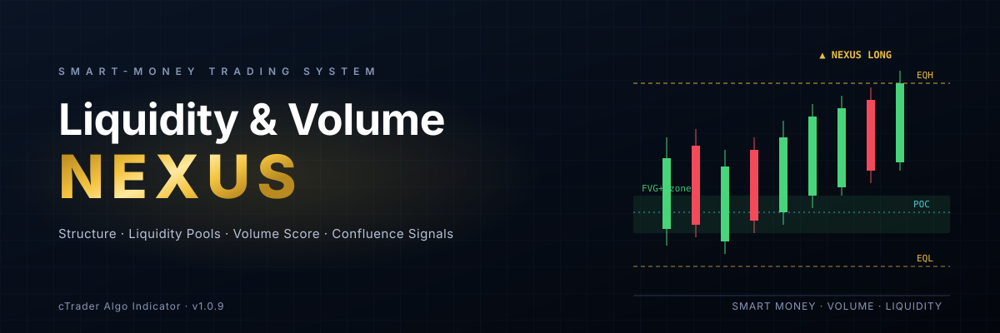
- v2.3.1–v2.3.3 (rev 9–11): state-hygiene audits; the engine became robot-ready —
INexusHostseam, shared build blocks; the card's trade-advice block gained honest horizon units. - v2.3.4 (rev 12): the size hint prints lots, not raw units (platform
VolumeForProportionalRiskreturns units; 1 lot =LotSizeunits). - v2.3.5 (rev 13): the journal CSV grew a 30th column,
plan_key— the join key with the AutoTrader's execution CSV. - v2.4.0 (rev 14): Signal Bridge (Module 4.8, group 16, default OFF): one atomic JSON frame per live closed bar for the companion robot.
- v2.4.1 (rev 15): the spread is read as a price difference (Ask−Bid) and converted through
TickSize— pre-2.4.1 builds mis-scaled it, so re-run old backtests; every cost gate now works as documented. - v2.4.2 (rev 16): the attach/history pass defers every off-screen draw (13× fewer chart operations on deep histories — H4 attaches in seconds now), and the Multi-Symbol Watch board keeps a permanent two-row gap above the chart's bottom edge.
SECTION 1 — FEATURES
Everything the product is, module by module, parameter by parameter.
1. Introduction & Philosophy
1.1 What is Liquidity & Volume Nexus?
Liquidity & Volume Nexus is a professional cTrader overlay indicator that unifies three institutional trading disciplines into one coherent system — and then does what almost no indicator dares to do: it measures its own signals and shows you the verdict.
- Smart-Money Structure — fractal swings, Break of Structure (BOS), Change of Character (CHoCH), breaker blocks, fair value gaps and their inverses, premium/discount ranges with the Optimal Trade Entry zone.
- Liquidity Mapping — Equal Highs / Equal Lows clusters, single-swing Buy-Side / Sell-Side liquidity, sweep detection with the raid's exact reach, prior-day and prior-week extremes — the resting orders every session trades against.
- Volume Intelligence — a time-of-day-aware volume baseline, a per-zone Volume Score with exponential decay, a Volume Squeeze detector and a full session Volume Profile with POC / VAH / VAL.
On top of that map sits a signal engine: a Nexus Signal fires only when a strong volume-backed zone, a structural confirmation (or a freshly swept liquidity pool), a cost-aware trade plan, the session clock and the volatility regime all agree. Each signal becomes a projected trade plan (Entry / Stop / TP1 / TP2 / TP3), a corner card with a grade and trade advice, and an entry in a journal that records what actually happened — in R, on your broker feed, with profit factor, drawdown and a statistical-significance verdict.
1.2 The philosophy in one paragraph
AccessRights.None).
1.3 Feature summary at a glance
| Capability | What you get |
|---|---|
| Chart map | Swings, BOS/CHoCH, breakers, FVG/iFVG, premium/discount + OTE, EQH/EQL, BSL/SSL, sweeps, PDH/PDL/PWH/PWL, volume profile, squeeze markers |
| Signals | Two setups — Continuation (structure break in the trade direction) and Reversal (fade a freshly swept pool on an SFP close) — behind ten quality gates |
| Trade plan | Entry / Stop / TP1 / TP2 / TP3 projected on the chart with R multiples, risk & reward boxes, position-size hint for your % risk |
| Signal card | Corner card with grade, gate count, the grade's own track record, setup label, R:R (gross + net after spread), and the ADVICE block: signal time, hold estimate (bars / hours / HTF bars), adverse-move guidance |
| Life-cycle | LIVE → STOPPED / TP1 TAGGED / ZONE GONE / STRUCTURE FLIP / SUPERSEDED / EXPIRED — latched, intrabar detection, outcome tags on the chart, alerts |
| Limit entries | Fill-verified: a limit plan is an ORDER until traded (gap fills at the better open); never-traded orders end NOT FILLED with no invented statistics |
| Journal | Every signal recorded with plan, session, grade, spread, gross/net R:R, MFE/MAE, outcome in R; panel aggregates; PF / max drawdown / losing streak / t-statistic; 30-column CSV export |
| Context | Info panel, context badge, session strip with countdowns, multi-timeframe engine, multi-symbol watch board |
| Transparency | Every rejection counted and printed ("why hasn't it fired in three days?" is one glance); debug log; history-pass report |
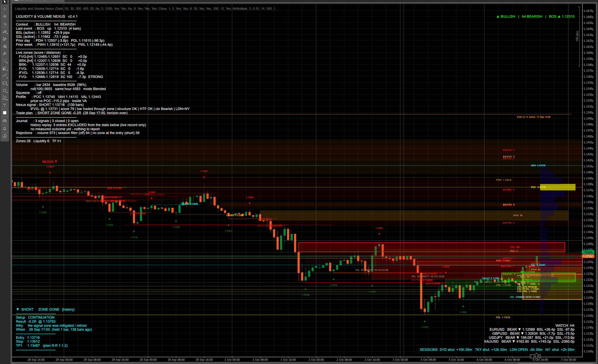
2. Architecture & Guarantees
2.1 The closed-bar pipeline (why it never repaints)
cTrader calls an indicator's Calculate() on every tick, and the bar it passes is the one still
forming. Nexus never lets an unfinished bar touch its engines: the whole pipeline (swings → structure → zones →
liquidity → volume → signals → journal) consumes the bar that has just closed. The forming bar is used only
for the live panel read-out, the provisional swing preview (explicitly marked, off by default) and the intrabar
life-cycle watch (so a stop taken mid-bar is reported mid-bar — and latched: a wick that retracts can never
"un-stop" a trade).
This was verified tick-by-tick: running the same series once as a live tick stream and once as closed bars produces identical journals — the same signals, the same fills, the same outcomes. What you backtest by eye on history is exactly what the live edge will do.
2.2 The guarantees
| Guarantee | How it is enforced |
|---|---|
| No repaint | Closed-bar pipeline; confirmed swings publish only after their right leg closes; zones, sweeps and events are immutable once published; outcomes are latched |
| No look-ahead | The volume baseline for bar N is built from bars before N only; ATR excludes the forming bar; PDH/PDL/PWH/PWL come from completed UTC day / ISO week periods and never move during their own day |
| No invented statistics | Limit plans are fill-verified; unfilled orders contribute no R; abandoned entries (timeframe switch) are excluded from every aggregate; history replay is separated from your live record |
| No permissions | AccessRights.None — no account access, no trading, no file writes; the CSV export goes to the cTrader log; the size hint is display-only |
| No frozen terminal | Tens of thousands of bars process in about two seconds; every chart-object family lives inside a budget; stable object names mean no flicker and no leaks |
| No silent misconfiguration | All 222 parameters are cross-validated at start-up (NormalizeSettings): contradictory combinations are reconciled to the safe side and reported in the log with Debug Log on |
3. Swing Detection (Module 1.1)
Swings are the atoms of the whole system: structure breaks, liquidity pools and the dealing range are all built
from them. A fractal swing is a bar whose high (or low) is strictly beyond its Swing Period
neighbours on both sides.
- Strict publication. A swing at bar C is published only after bar C + Legs has closed. Until then it does not exist for any module — this is the anti-repaint contract.
- Tick epsilon. A neighbour must sit at least half a tick beyond the centre to count as lower/higher. Exact ties therefore cancel the swing — deliberately: equal highs/lows belong to the Liquidity Engine (Module 2), not to the swing list, so the same level is never owned twice.
- Markers. A confirmed swing high draws a filled red ▼ above the bar; a swing low draws a filled green ▲ below it (colours configurable). Optional price labels print the exact level.
- Provisional preview (off by default): a hollow △/▽ glyph on the forming bar shows a swing that would confirm if the remaining bars cooperate. It is repainting by definition, is drawn in its own grey colour, never influences any module, and vanishes the moment it becomes invalid — a confirmed swing never carries two glyphs.
Swing Period (fractal legs) = 5 (default) is the balanced choice. Lower legs (2–3) mark up every
micro-swing — good for scalping M1/M5, noisy elsewhere. Higher legs (8–12) keep only major pivots — right for H4/D1
swing reading. The same parameter family drives the MTF engine separately (HTF Swing Period).
4. Market Structure — BOS / CHoCH / Breakers (Module 1.2)
The Structure Engine tracks the active (last unbroken) swing high and swing low — the two levels the market is currently "answering to" — and publishes an event the moment one of them breaks:
| Event | Meaning | On the chart |
|---|---|---|
| BOS (Break of Structure) | The break continues the prevailing context: a high broken while the context is Bullish or neutral, a low broken while Bearish | Solid horizontal line at the broken level, starting at the swing, extending past the break bar; label "BOS" (optionally with the price) |
| CHoCH (Change of Character) | The first break against the prevailing context — the earliest structural hint that the trend may be turning | Dotted line, aqua when bullish (breaking a high in a Bearish context), orange when bearish |
- Break Confirmation parameter:
Close(default — the bar must close beyond the level; fewer, stronger events) orWick(any trade beyond the level; faster, noisier — one bar can then publish two events when it takes out both sides). - Synthesised context. After every event the engine holds a context reading — BULLISH / BEARISH / RANGE — shown in the badge, the panel, and used by the signal engine (the reversal setup is a Range-context specialist). Before the first event the context is RANGE.
- Active BSL / SSL lines. Two dotted silver horizontal lines mark the current unbroken swing high (buy-side liquidity resting above it) and swing low (sell-side below). When a line breaks, the engine falls back to the previous unbroken swing of that side — the levels walk backwards through history honestly.
- Breaker blocks. When a swing breaks, the engine searches back (window:
Breaker Search Window) for the last opposite candle before the broken swing — the down-candle before a broken high (bullish breaker, drawn lime), the up-candle before a broken low (bearish breaker, red). That candle's full range becomes a zone: institutions that were trapped there often defend it on the retest. Near-duplicate breakers (80%+ overlap of the smaller range) are collapsed into one. Breakers age out afterBreaker Max Agebars or when fully mitigated. - Swing separation. A liquidity sweep (Module 2, wick-based by default) never marks a swing as structurally broken (close-based by default) — so a wick raid below a low does not blind the engine to the real close-break that follows. This separation is what makes the BOS/CHoCH stream trustworthy on raid-heavy charts.
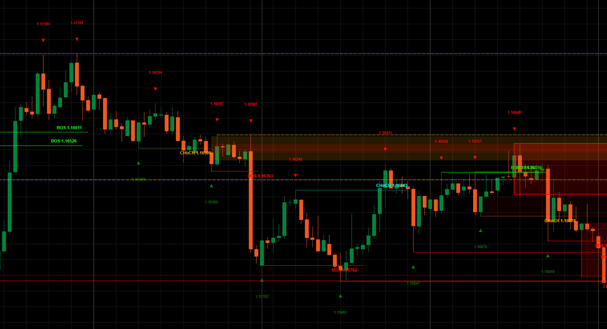
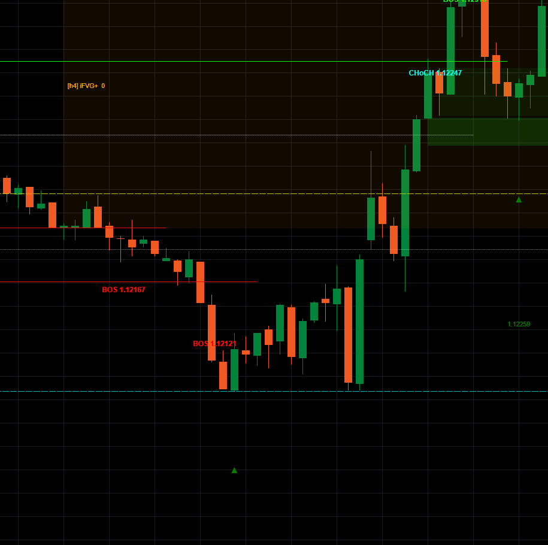
5. Fair Value Gaps, Inverse FVG, Mitigation (Module 1.3)
A Fair Value Gap is a three-bar imbalance: a bullish FVG exists when bar N's low trades strictly above bar N−2's high (the market jumped and left an unfilled range between); a bearish FVG is the mirror. The gap is drawn as a rectangle from the moment it forms, and from then on it lives a measurable life:
- Size filter. Gaps smaller than
FVG Min Size (x ATR)(default 0.25) or a points minimum are ignored — sub-noise gaps never become zones. - Partial mitigation. Every trade inside the gap updates its
MitigationRatio(0→1). The fill's transparency follows the zone's Volume Score; a mitigated zone fades to a third of its alpha and its rectangle stops extending at the mitigation time (plus a few bars). - Full mitigation → Inverse FVG. When the bar closes through the far edge of the gap, the gap is consumed and — with
Enable Inverse FVGon — an inverse zone (orange) is spawned over the same range with the flipped polarity: a fully filled bullish gap becomes resistance, a filled bearish gap becomes support. Inverses never flip again — no infinite ping-pong. - Lifetime. Unmitigated gaps deactivate after
FVG Max Agebars; mitigated ones linger forKeep Mitigated Zonesbars (for context) unlessHide Mitigated Zonesremoves them from sight. Deactivation is state, not deletion: an aged zone stops scoring and can no longer produce signals. - Polarity. Bullish zones (bullish FVG, inverse of a bearish FVG, bullish breaker, EQL, SSL) are candidate support for longs; the mirror set serves shorts. The signal engine only ever reacts at a zone whose polarity matches the trade direction.
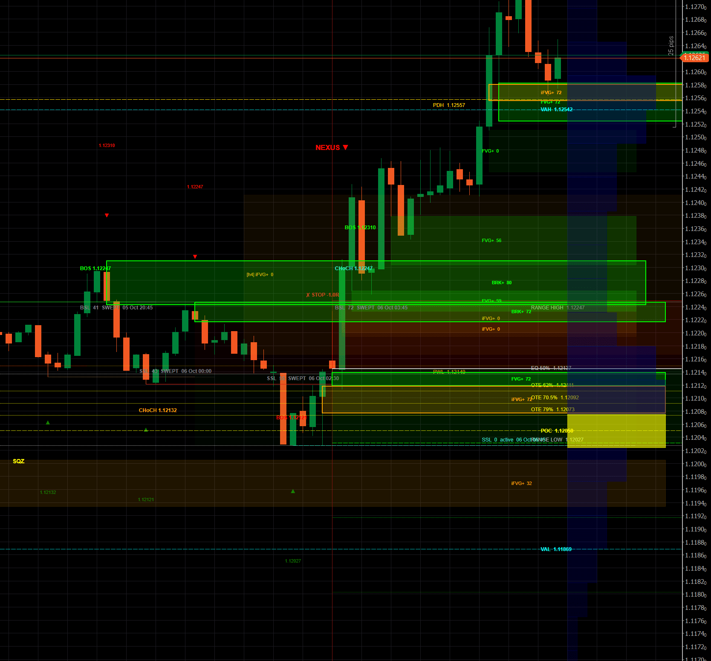
6. Premium / Discount / OTE (Module 1.4)
The dealing range is the last confirmed swing high / swing low pair — the battlefield institutions are currently working within. The module paints its upper half as Premium (red tint — expensive; favour selling) and its lower half as Discount (green tint — cheap; favour buying), with three dotted reference lines:
- RANGE HIGH / RANGE LOW — the range boundaries, labelled with prices.
- EQ 50% — equilibrium: the fair middle. Above it, longs are chasing; below it, shorts are chasing.
- OTE 62 / 70.5 / 79 — the Optimal Trade Entry band (yellow): the 62%–79% retracement of the range measured from the top, where a continuation long ideally enters on a pullback. Shorts mirror it: their OTE is the same band measured from the bottom (the module draws the retracement of the current range direction).
The range redraws only when a new swing confirms or on the scheduled refresh — it is cheap, stable and never
flickers. With Show Premium / Discount Range off, the whole module (including its eight chart objects)
is removed cleanly.
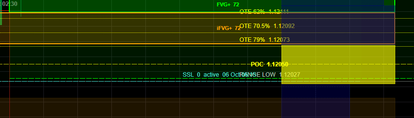
7. Liquidity Engine & Sweeps (Module 2)
Liquidity is where resting orders (stop-losses, breakout buys) sit. The engine maintains two families of levels:
7.1 Equal Highs / Equal Lows (EQH / EQL)
- Confirmed swings within
Liquidity Lookbackbars are clustered when their prices agree inside a tolerance (points or ATR-based). A cluster of ≥Minimum Touches(default 2) swings becomes a pool: orange line for EQH (buy-side liquidity above), aqua for EQL (sell-side below). - The label shows touches ("EQH x3") and the zone's Volume Score. The more touches, the thicker/denser the line style — a triple-touch EQH is a magnet with a lot of stops behind it.
- Clusters refresh in place with stable object names: a level that gains a third touch updates instead of redrawing somewhere else. A swing whose liquidity was already taken can never seed a new cluster — no phantom "fresh" levels out of consumed swings.
7.2 Single-swing BSL / SSL
- The last unbroken swing high carries a BSL line (gold — buy-side resting above), the last unbroken swing low an SSL line (turquoise — sell-side below). They follow the newest confirmed swing automatically and live until swept — age never kills them, because "the market hasn't traded there for 300 bars" does not remove the orders resting there.
7.3 Sweeps — the event everything revolves around
- A pool is swept when price trades beyond its level: by wick (
Sweep Confirmation = Wick, default — raids are wicks) or by close. The engine records the sweep bar, the exact raid reach (that bar's extreme — the future reversal stop anchor), marks the source swings as swept (but not structurally broken), and repaints the level grey + dotted with a "SWEPT" label. - Swept pools stay visible for
Keep Swept Poolsbars (default 60; 0 hides them at once) — they are listed on the panel with a "*" marker, because a freshly swept level is exactly what the Reversal setup fades. - A sweep of buy-side liquidity above the highs is, in smart-money reading, fuel for a move down (stops of shorts were harvested, breakout buyers are trapped); a sweep of sell-side below the lows is fuel for a move up. The signal engine turns that reading into an actual setup — see Module 4.1.
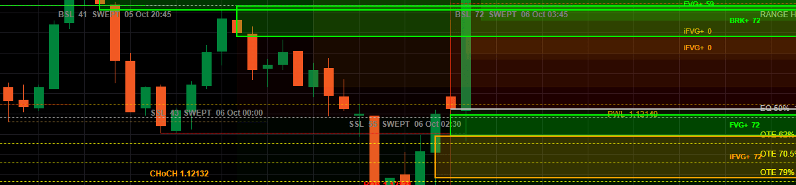
8. Prior Day / Prior Week Levels (Module 2.5)
Four fixed lines every session trader needs: PDH / PDL (previous completed UTC day's high and low, solid) and PWH / PWL (previous completed ISO week's extremes, dotted, slightly transparent). Labels carry the prices; the panel prints all four with their signed distance from the live price in pips.
- Immutable by construction. Levels are recomputed only when the closed bar crosses into a new day/week, and the scan never includes the current period — today's spike can never leak into "yesterday's high". They cannot repaint, period.
- These are the highest-probability liquidity references on the chart: algos and desk traders key entries, stops and targets to PDH/PDL daily. A wick through PDH that closes back below it is one of the most reliable intraday fade patterns there is — and Nexus detects exactly that shape as a reversal signal when the raid coincides with a tracked pool.
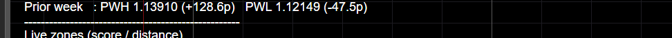
9. Volume Nexus — Baseline & Zone Score (Module 3)
9.1 The honest yardstick: time-of-day baseline
cAlgo exposes tick volume only, and tick volume is strongly seasonal: the London open prints several times the
volume of the late New York session. Comparing a bar against a plain rolling average therefore calls everything
an anomaly at 08:00 and nothing at 20:00. Nexus maintains a per-time-bucket average (bucket size:
Session Bucket Size, default 60 min) over the loaded history and blends it with the rolling average:
| Baseline Mode | Yardstick | Use it when… |
|---|---|---|
Rolling | Simple average of the last N bars (v1 behaviour) | 24/7 instruments with flat seasonality (some crypto) |
Session | Average of the same time-of-day bucket only | Strongly seasonal instruments (FX during sessions) |
Blended (default, 60% session) | Weighted mix of both | The universal choice |
A bar never inflates its own yardstick (the baseline for bar N is built strictly from bars before N), and
Baseline History bounds the sliding window (5000 bars default; 0 = all loaded history). The panel prints
all three numbers side by side — bar volume, baseline with its %, the rolling average and the same-hour average — so
you can always see which question is being asked.
9.2 Zone Volume Score (0–100)
Every active zone accumulates the volume of the bars that trade through it. The score is
(average per-bar volume inside the zone) / (current baseline) × 50, clamped to 0–100:
50 means the zone trades exactly at the market's normal rate; 100 means twice the rate or more.
With Zone Score Half-Life (default 200 bars) contributions decay exponentially, so a zone is scored on
what it has been doing lately, not on one busy bar from three weeks ago.
| Score | Strength bucket | What it means |
|---|---|---|
≥ 80 (Very Strong) | Very Strong (thickness 3) | Heavy two-way interest — the level is being actively defended/attacked; grade A+ material |
≥ 60 (Strong) | Strong (thickness 2) | Above-normal activity — a zone worth trading; the signal engine's default floor |
| ≥ 33 | Average | Normal interest — context only |
| < 33 | Weak | The market has ignored this level — signals from it are rejected by default |
The score label is printed inside each zone (optional) and the fill alpha scales with it: bright zones are busy zones.
10. Volume Squeeze Detector (Module 3.4)
A squeeze is a stretch of unusually quiet volume — the market coiling before expansion. The detector
counts consecutive closed bars whose volume sits below Squeeze: Volume Below (% of the time-of-day
baseline, default 60%). After Squeeze: Minimum Bars (default 5) such bars — and, when
Require Zone Nearby is on, only within Zone Proximity pips of an active zone — the state
fires once: a yellow SQZ marker appears under the bar, the badge and panel read "SQUEEZE", and (optionally) an
alert is raised. The counter resets the first time volume returns to normal.
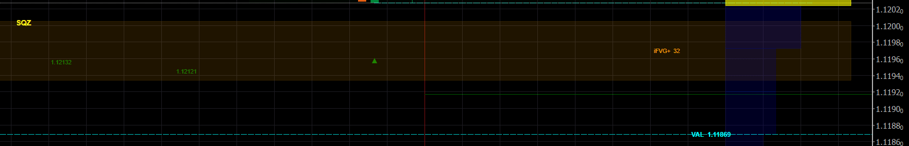
11. Volume Profile (Module 3.5)
A price-binned histogram of the selected period, drawn to the right of the last bar:
- Range modes.
Last Bars(rolling N bars, default 200) or true calendar periods —Current Day/Current Week/Current Monthin UTC (not rolling 24h/7d windows — a daily profile never mixes two trading days). - POC (Point of Control, yellow line) — the price level with the most volume: the period's fair price and a magnet whenever price strays.
- VAH / VAL (Value Area High/Low, aqua) — the band holding
Value Area% (default 70) of the period's volume around the POC. Inside the VA the market is "accepting" price; outside it is exploring, and edges of the VA become support/resistance. - Each bar's volume is spread evenly across the bins its range covers; bins under 4% of the maximum are not drawn (the histogram stays a calm background column, not a neon block). The panel prints POC/VAH/VAL, the price's signed distance from the POC in pips, and whether price is inside or outside the VA.
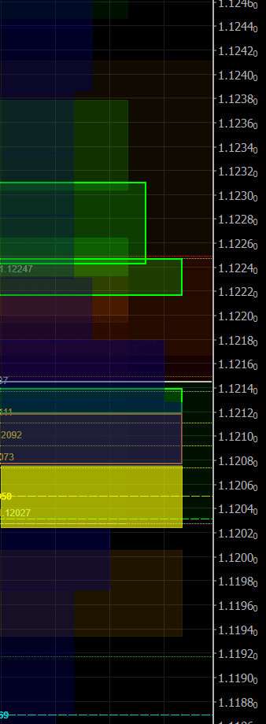
12. Nexus Signal Engine (Module 4.1)
The Nexus Signal is the product's answer to one question: "is this setup worth taking right now, at this cost, in this session?" It fires on a closed bar, at most once per cooldown window, and only after passing a gauntlet of gates. Two professional setups exist; every signal is labelled with the one that fired.
12.1 The two setups (Signal Direction Mode)
| Setup | Idea | Confirmation | Stop | Best regime |
|---|---|---|---|---|
| CONTINUATION trend |
Price reacts at a strong volume-backed zone and structure breaks in the trade direction: the market has shown its hand, join it | A fresh BOS/CHoCH within Structure Confirmation Lookback bars, matching the direction |
Beyond the nearest active swing / zone edge on the risk side | Trending context on the chart TF, ideally with the HTF agreeing |
| REVERSAL (SFP fade) range |
A liquidity pool was just swept (stops harvested beyond the highs/lows) and the close returned inside the level — the raid failed; fade it | The SFP close itself — never a BOS (by the time a BOS agrees with the raid, the raid is the trend). Capped by Max Chase From Level (x ATR) so the entry is a fade, not a late chase |
Beyond the raid extreme (the sweep bar's wick) and the signal bar's wick — never behind the thin pool band | Range context (enforced by Require Range Context, with one narrow exemption: the raid's own fresh break) |
Signal Direction Mode chooses what may fire: Continuation (default), Reversal,
or Both (the fade is tried first — it is the more specific event — and every signal carries its setup
label on the card, in the panel, the journal and the CSV).
12.2 The gate gauntlet (in evaluation order)
Every gate below must pass. Each rejection is counted by reason and shown on the panel's Rejections line.
| # | Gate | What it rejects | Parameters |
|---|---|---|---|
| 1 | Enabled | — | Enable Nexus Signals |
| 2 | Cooldown | Signal spam from one impulse | Signal Cooldown (10 bars) |
| 3 | Session filter | Dead hours (Sydney lull, off-hours rollover) — if you opt in | Filter Signals By Session + per-session allows |
| 4 | News blackout | Your listed UTC news times ± window | News Blackout, times list, ± minutes |
| 5 | Max spread | Trading into a widened market | Max Spread (points) (0 = off) |
| 6 | Bar range cap | News-explosion bars — zone+break+spike in one candle; the entry is already untradable | Max Signal Bar Range (x ATR) (4) |
| 7 | Volume anomaly | Quiet bars (below ratio) and absurd spikes (above cap — a data print or a headline, not a setup) | Volume Anomaly Ratio (1.5×), Max Volume Spike (8×) |
| 8 | Setup logic | Continuation: no fresh matching BOS/CHoCH, no strong zone at the entry location. Reversal: no fresh sweep, no SFP close, chase too far, wrong context | Direction mode + reversal bounds + entry-location mode + zone score floor |
| 9 | HTF veto | Trading straight into the higher-timeframe trend (optional) | Require HTF Confirmation |
| 10 | Plan gates | Gross R:R below floor; net R:R after spread below floor; risk narrower than N spreads (micro-stop fiction no broker executes) | Minimum R:R (0.8), Minimum NET R:R (1.0), Minimum Plan Risk (x spread) (3) |
12.3 Entry-location modes (where the close must sit)
| Mode | Rule | Character |
|---|---|---|
Touching Zone (default) | The bar must actually trade through the zone, and the close must stay within zone height + 5 pips of it | The weakest rule that still guarantees the level took part in the bar |
Inside Zone | The close is inside the zone | Stricter reaction proof |
Near Equilibrium | The close sits within N% of the zone height from its middle | Best-price discipline |
Retraced Into Zone | Close inside AND at least N% retraced from the far edge (discount half for longs, premium for shorts) | The strictest — no chasing |
Anywhere | Close within zone height + tolerance (v1 behaviour) | Most signals, most noise — not recommended |
Liquidity pools are treated as levels, not areas: their band is a fraction of the equal-level tolerance, so they are judged by a fixed 5-pip direction tolerance instead of the entry mode — a thin pool is never asked for a sub-pip close.
12.4 What a fired signal produces
- A NEXUS marker on the signal bar (▲ lime below the bar for a long, ▼ red above for a short) plus a coloured vertical line.
- A trade plan (Module 4.5): entry, structural stop, TP1/TP2/TP3 — validated so the stop is always on the risk side and the targets on the reward side, or the plan does not exist at all.
- The signal card (Module 4.4) with the grade, gates, setup label and the ADVICE block.
- A journal entry (Module 4.6) with the full plan and the live/replay flag.
- Alerts: a sound and an
[LVN ALERT]line in the cTrader log — live signals only, never during the history replay.
13. The Signal Card & Grades (Module 4.4)
The card is a corner-locked static text block (bottom-left by default) that mirrors the most recent accepted signal — it is present right after you attach the indicator, follows its plan while the plan lives, then collapses into a compact RESULT card reporting the outcome. It is the product's dashboard at the moment of decision.
13.1 Grades — a checklist, not a prophecy
| Grade | Requirements | Reading |
|---|---|---|
| A+ | Zone Volume Score ≥ Very Strong (80) AND all four gates passed AND HTF aligned (waived when MTF is off — there is nothing to align to) | The full confluence: busy level, structure, volume, regime agreement |
| A | Score ≥ Strong (60) AND all gates passed | The working grade — most taken trades should live here |
| B | Score ≥ Strong AND at least 3 of 4 gates | Watchlist material; the card tells you which gate failed |
| C | Anything else | Not shown by default (Toast: Minimum Grade = A) |
The four gates on the card: (1) zone score above the signal floor; (2) structure confirmation — a fresh
matching BOS/CHoCH for continuations, or the SFP close itself for reversals (a reversal is never punished for lacking
the very break that contradicts it); (3) the volume anomaly, judged on the same time-of-day baseline the
engine used; (4) HTF context not opposing. Below the grade the card prints the grade's own track record on
your feed — Track A: 12 closed, avg +0.31R, win 58% — so the letter is never read without its history.
13.2 Card modes & lifetime
- Lifecycle (default): the card stays while the plan is actionable, carrying a live
STATUS LIVE n bars left(orSTATUS LIMIT PENDING @ pricefor an unfilled limit), then becomes the RESULT card for the configured hold. - Timer: the classic auto-hide countdown.
- Always: never hides (not recommended — a dead plan keeps showing numbers).
- A card restored from the history replay after attach / timeframe switch is tagged
[history]and prints its true age ("95 bars ago") — an old outcome can never masquerade as breaking news. Countdowns arm on the first live tick, so a deep replay can never swallow the card before you see it.
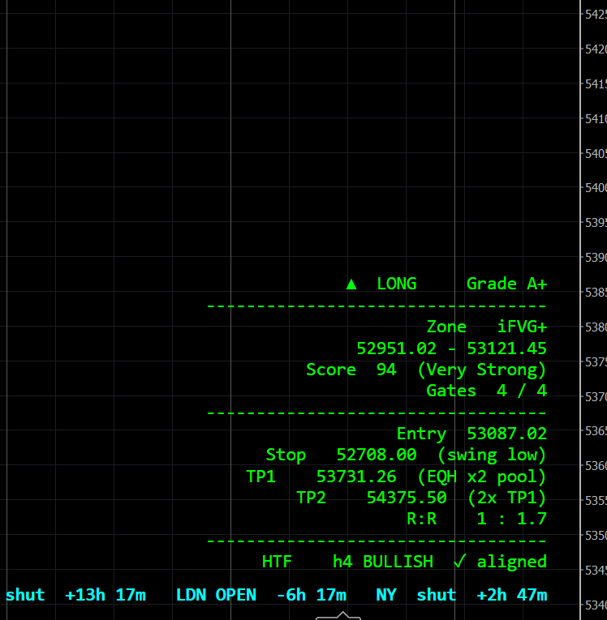
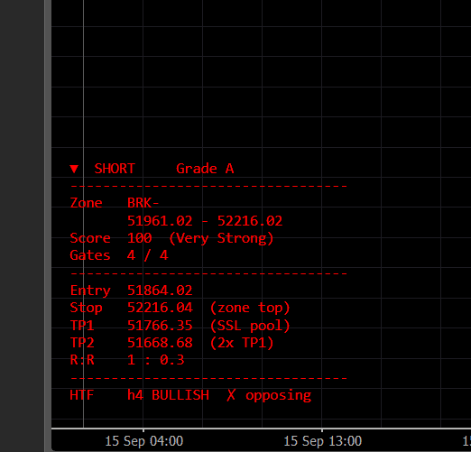
14. Trade Plan Projection & Life-Cycle (Module 4.5)
14.1 The projection
From the signal bar the plan is drawn on the chart: a solid silver ENTRY line, a dotted red STOP line
(with its distance in pips), TP1 (solid-ish), TP2 and a dimmer TP3 (each labelled with price and
R multiple), plus translucent risk and reward boxes and a header with direction, grade and capped R:R
("1 : 5+" above the display cap — the raw value lives in the journal). The projection lives for
Trade Plan Horizon bars (default 60) and is then removed automatically — no orphans, no manual cleanup.
14.2 Stop & target construction
- Stop: for a long — the deepest of {zone bottom, active swing low, and for reversals the sweep extreme and the signal bar's low}, minus a 2-tick buffer; mirrored for shorts. If no structural reference exists on the risk side, the plan declares itself non-structural, reports R:R = unknown (0) and is rejected by the gates rather than printed with an absurd ratio.
- Targets: the nearest and second- and third-nearest live (unswept) opposite-side liquidity pools, capped at
Max Target Distance (x ATR)— a pool 300 pips away is real liquidity but not a first objective. Beyond the cap, volatility-scaled fallbacks take over (2× / 4× / 6× ATR), then labelled pip fallbacks. Every rung says what it is made of ("EQH x2 pool", "2x TP1", "fallback 4x ATR").
14.3 The life-cycle — six objective rules, first hit wins, latched
| Status | Trigger | Booked as |
|---|---|---|
| STOPPED | Price traded the stop (a gap through it is measured at the open; a bar touching both stop and TP1 is read conservatively as the stop) | −1R (or worse on a gap) |
| TP1 TAGGED | Price traded TP1 on any bar after the fill bar | +R of the TP1 multiple |
| ZONE GONE | The signal zone was mitigated/retired after the entry (the state it had on the signal bar is the premise, not the invalidation — the reaction that creates a signal usually fills its own zone) | Floating R at that close |
| STRUCTURE FLIP | A BOS/CHoCH against the plan after the signal bar | Floating R at that close |
| SUPERSEDED | A newer Nexus signal replaced this plan (or the plan cap pushed it out) | Floating R at that close — never a fake break-even |
| EXPIRED | The horizon ran out | Floating R at that close |
| LIMIT PENDING | (open state) a limit order waiting for its price | — |
| NOT FILLED | The limit was cancelled by horizon/premise-death, or a gap would have filled it beyond its own stop (no venue opens that position) | No R — counted, never measured |
The life-cycle also advances intrabar: a stop taken mid-bar is reported the moment it happens, and every outcome is latched — a wick that retracts cannot un-stop a trade. While a position is open, the plan tracks MFE / MAE (maximum favourable / adverse excursion in R from the actual fill), including the death bar of every exit type.
14.4 Market vs limit entries
Market at close(default): the entry is the signal bar's close — filled by definition.Limit at zone EQ: the plan bids/asks the zone equilibrium for a pullback entry. The whole plan (stop, targets, R:R, size) is measured from the limit price. If the equilibrium sits on the wrong side of the close, the plan silently falls back to market with an honest note. While unfilled the card readsLIMIT PENDING; a bar that gaps through the limit fills at the better open price; TP1 is never booked on the fill bar itself (the intrabar order of touches is unknowable); a never-traded order ends NOT FILLED and contributes nothing to your statistics.
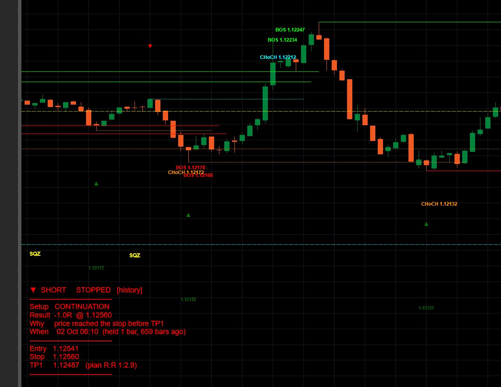
15. The Trade Advice Block (new in v2.3.0)
Three lines at the bottom of the card answer the questions a trader actually has at the moment of decision — every figure from live data or your own journal, never a probability:
ADVICE ▲ LONG signal 01 May 12:00 UTC (LDN) hold <= 60 bars (~5h, ~5 H4 bars) - then exit or re-assess adverse: max 20p = 1.0R at the stop; typical MAE -0.42R (n=12)
- (a) WHEN — the signal bar's time (UTC) and session.
- (b) HOW LONG the premise lives — the plan horizon in bars, translated into wall-clock time using your series' own median bar step, and — with MTF on — into higher-timeframe bars, because "60 bars" is five hours on M5 and ten days on H4. Past that line the plan expires by design: exit or re-assess, do not "hold and hope". This is the number to consult when price goes against you and you are deciding whether the idea is merely early or simply wrong.
- (d) HOW FAR price may travel against you — two honest figures: the contractual maximum (your stop distance in pips and R — beyond it there is no position, only history) and the empirical expectation: the average MAE of your feed's measured trades with its sample size. Adverse movement inside the typical MAE is the plan breathing; consistently beyond it means the entry class is worse than your record — that is data, not opinion.
- (c) The ladder — TP1/TP2/TP3 and the stop live in the plan section directly above, each with its R multiple.
The block is switchable (Toast: Show Trade Advice); with it off, the classic card returns, including the one-line "When" stamp.
16. Signal Journal & Performance Statistics (Module 4.6)
Every accepted signal is recorded with its full plan (entry/stop/TP1–3, gross and net R:R), grade, setup, session, spread, zone, gate count, fill state (market/limit, filled or not, fill time), MFE/MAE and — when the plan resolves — the outcome in R with its status and holding time. The panel block reports:
Journal : 34 signals | 28 closed | 3 open | 2 not filled | 1 abandoned
history replay: 12 entries EXCLUDED from the stats below (live record only)
TP1 first 11 (46%) | stop 9 | other 4
avg +0.31R best +2.00R worst -1.00R win 58%
MFE avg +1.12R MAE avg -0.44R
PF 1.42 maxDD 3.2R worst streak 4 t=+1.81 edge not yet significant
by grade: A+ +0.52R 62% (13) A +0.14R 54% (11)
grade check: A+ beats A by +0.38R (n=13/11)
- Populations never mix. Not-filled orders, abandoned entries (a timeframe switch destroyed their plans) and — by default — history-replay signals are counted but excluded from every R aggregate. What you read is your live record on this feed. (
Journal: Count History Replay In Statsopts the replay back in.) - Performance-risk line (v2.2.0+): Profit Factor, max drawdown of the cumulative R curve, worst losing streak, and the expectancy's t-statistic with a blunt verdict:
edge not yet significant/edge significant at ~95%/NEGATIVE edge significant. This is the single most important sentence the product prints — see Section 3. - Grade calibration: per-grade averages and win rates, plus an explicit grade check once both A+ and A hold ≥ 10 measured closes — including the sentence the letters alone never say: "A+ does NOT beat A on this feed". The card quotes the same record next to every new letter.
- CSV export (to the cTrader log — file writes would need permissions the product refuses to take): 30 columns, every row exactly the header's field count, printed every N closes:
time, symbol, timeframe, direction, setup, grade, zone, session, htf_aligned, volume_score, gates, entry, stop, tp1, tp2, tp3, rr_gross, rr_net, spread_points, entry_type, filled, fill_time, source, status, result_r, held_bars, mfe_r, mae_r, outcome_time, plan_key— the last column (v2.3.5) is the join key with the AutoTrader's execution CSV.
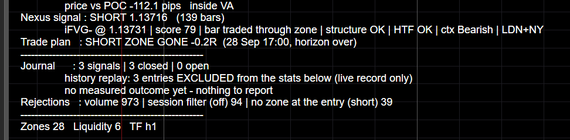
17. Info Panel, Context Badge, Session Strip (Module 4.2)
- Info panel (top-left by default, position configurable): context and last structure event with age; active BSL/SSL with signed pip distances; PDH/PDL/PWH/PWL with distances; the nearest live zones sorted by distance (score, range or mid price, signed pip distance, STRONG flag, "*" on swept pools); the volume block (bar vs baseline %, rolling, same-hour, mode); squeeze state; profile POC/VAH/VAL and price-vs-VA; the last Nexus signal with its reason; the trade-plan block (levels, live position in R, pending-order state, or the dated outcome — the panel keeps answering "what did the last signal do?" after the projection is gone); the journal block; and the Rejections line — the top "no" reasons since attach, so "why hasn't it fired in three days?" is one glance, not guesswork. The panel refreshes at most once per
Panel Refresh (ms)— reading speed, not tick speed. - Context badge (top-right): one line — chart context arrow, the HTF context when MTF is on, SQUEEZE when active, and the last structure event with its level.
- Session strip (bottom-right): SYD / TKY / LDN / NY open-shut state with countdowns, on your configured UTC windows. The strip is the product's single session clock — the main panel deliberately no longer repeats it.
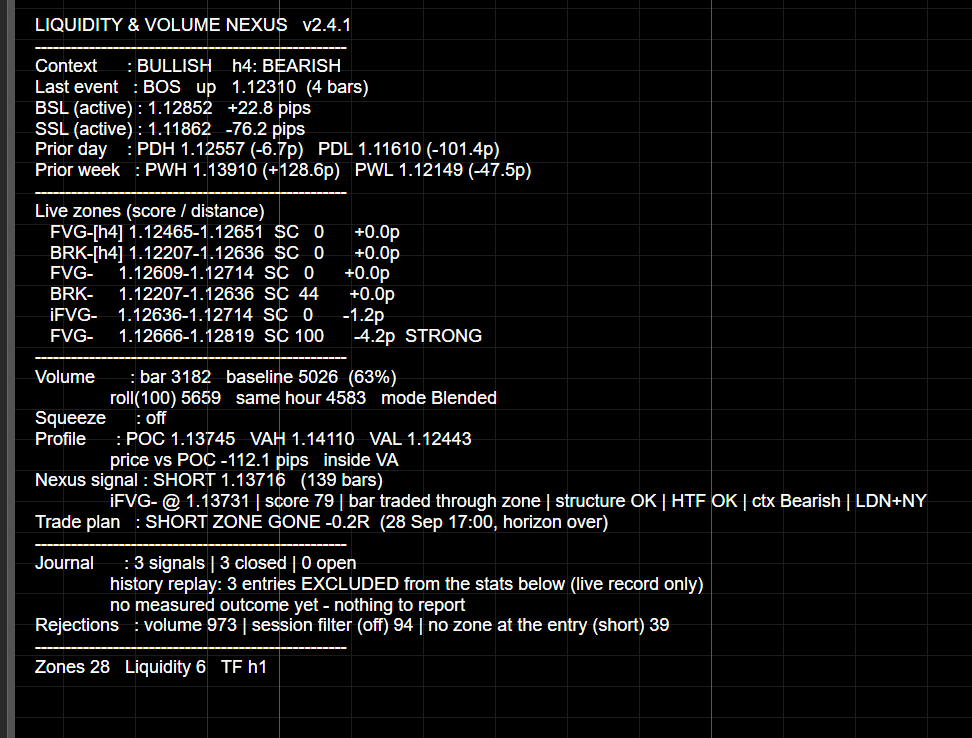
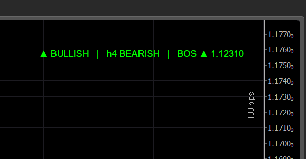
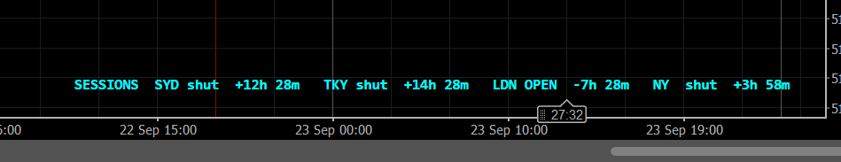
18. Multi-Timeframe Mode (Module 4.3)
With Enable Multi-Timeframe Mode on, an independent structure + zone stack runs on the chosen higher
timeframe (default H4) over closed HTF bars only:
- HTF zones render semi-transparent (
HTF Transparency) and carry an[H4]tag in their labels — and in signal reasons, cards and the journal when a signal reacts at an HTF level. - The HTF context (Bullish / Bearish / Range) feeds the badge, the card's HTF line, the optional
Require HTF Confirmationveto and the A+ grade, and arbitrates reversal setups. - HTF zones share the chart registry and accumulate volume on chart bars — they carry a real Volume Score measured at your chart's resolution. Rendering is owned exclusively by the MTF pass: no delete/redraw churn, and an HTF zone that ages out loses its objects in the same pass.
- Grade A+ needs HTF alignment only when MTF is on — without a higher timeframe there is nothing to align to, and A+ stays reachable.
19. Multi-Symbol Watch (Module 4.7)
An optional board (off by default) listing up to Watch: Max Symbols symbols on a shared higher timeframe:
each row shows the symbol's last structural context (BULL ▲ / BEAR ▼ / RANGE ◆ from its own swing-break scan),
its current price, and the signed pip distance to its nearest resting BSL / SSL liquidity — where the
neighbouring markets keep their stops. One throttled pass per refresh interval, no chart objects beyond one static
text, no extra permissions. Since v2.4.2 the board sits in the bottom-right corner with a permanent two-text-row gap above the
chart's bottom edge — the toast card's padding convention — and when the session strip is enabled it
stacks above the strip, so the strip stays the bottom-most line and the live price area is never covered.
The gap no longer depends on the strip being visible: the board breathes on every layout. A typo in
the symbol list is kept as a visible "no data" row instead of silently missing.
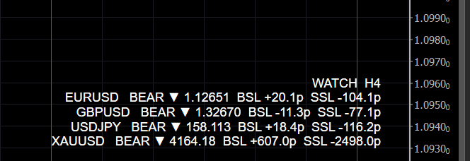
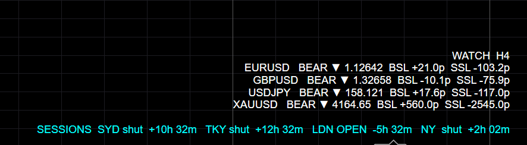
20. Alerts, Position Sizing & the Cost Model
20.1 Alerts
- Signal alert: the cTrader log receives
[LVN ALERT] Nexus LONG | EURUSD M15 :: reason | price | timeand (optionally) a platform notification sound. The indicator API has no popup channel — the log line and the corner card are the popup, and the sound is your eyes-free trigger. - Outcome alert: when a plan ends —
STOPPED −1.0R after 5 bars,TP1 TAGGED +2.0R,NOT FILLED(with the honest reason, including the gap-through-stop rejection) — horizon expiry and supersede are treated as bookkeeping and stay silent. - Squeeze alert: optional, when a squeeze fires at the live edge.
- All alerts are live-edge only: attaching the indicator to a deep history never machine-guns you with last month's signals.
20.2 Position size hint
With Risk Per Plan (% of balance) > 0 (default 1%), the card and panel print the suggested volume for
the plan — computed by the platform's own proportional-risk arithmetic from the plan's stop distance, rounded to your
symbol's volume step. It is display-only: the product places nothing and never reads your money amounts itself.
An unavailable account simply prints no line — a wrong size would be worse than none.
20.3 The cost model
- The spread is re-read from the feed on every closed bar; when a feed publishes none (some CFD/crypto symbols), a manual assumption wins, else a conservative instrument-class estimate applies (1 pip FX; 2 pips metals, indices and crypto — including the six-character crypto pairs). Anything assumed is flagged "(assumed)" on the panel so a cost figure is never mistaken for a quote.
- Net R:R = (reward − spread) / (risk + spread): you pay the spread twice, in and out. The card prints both ratios (capped for display at
Max Displayed R:R— above it you see "5+"; gates, journal and CSV keep the raw value), and the gates judge the net one. - Micro-stop gate: a plan whose entire risk is narrower than
Minimum Plan Risk (x spread)(default 3) cannot be executed as printed and is rejected before anything is drawn, alerted or journaled. - v2.4.1 unit fix — re-run old backtests: the spread is a price difference (Ask−Bid); pre-2.4.1 builds read it as a point count and re-multiplied by
TickSize, making every cost gate (net R:R, max spread, micro-stop floor) silently see a near-zero cost. If you measured plans on v2.4.0 or older, those numbers were optimistic — the gates now charge what a broker actually charges.
20.4 Signal Bridge — the robot feed (Module 4.8, new in v2.4.0)
The bridge is a one-way, file-based feed for the companion cBot Liquidity & Volume Nexus — AutoTrader:
on every live closed bar the indicator writes one atomic JSON frame — schema version, heartbeat, the current
plan, a journal snapshot and the rejection counters — to Documents/cAlgo/LVN/bridge/<SYMBOL>_<TF>.json
(temp file + atomic move, so a polling robot never reads a half-written frame). The robot's Verify / Follow modes read
that frame; the bridge is never the robot's only channel.
- Default OFF, and honest about permissions: file I/O needs
AccessRights.FileSystem. The store build shipsNone, so switching the bridge on without rebuilding logs the exact one-line attribute change once — then stays silent instead of spamming errors. - Measurement-neutral: with the bridge ON the engine's canonical dumps are byte-identical to OFF (proven by the rig). Publishing observes; it never decides.
- Live-edge only: history replay publishes nothing — a backtest has no indicator instance, and a replayed frame would be a lie about "now".
21. Complete Parameter Reference — 222 Parameters, 17 Groups
Every parameter with its default and a working description. Defaults in bold. Ranges shown where the dialog
enforces them. All of them are cross-validated at start-up: contradictory combinations are reconciled to the safe
side and reported in the log when Debug Log is on.
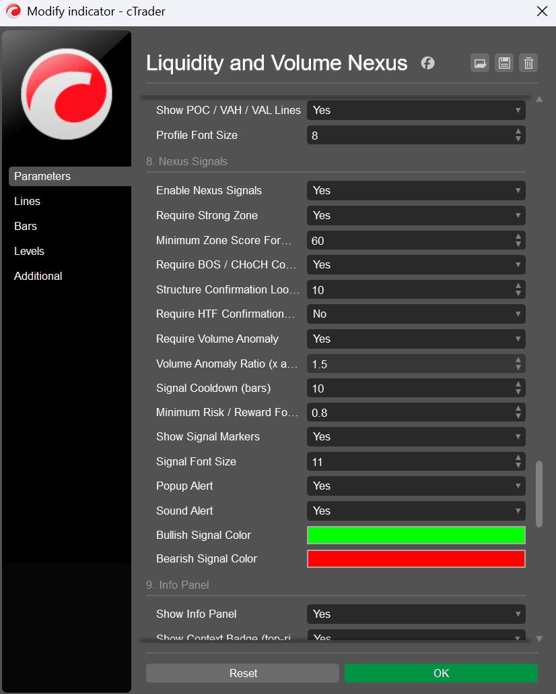
Group 0 — General (7)
| Parameter | Default | Description |
|---|---|---|
| Theme Preset (Light = white terminal) | Dark | Recolours the whole palette for a white terminal background. Apply first, then fine-tune individual colours if you like. |
| Max Active Zones (FVG / breakers / HTF) | 50 (5–400) | Hard cap of the zone registry. When full, inactive zones are evicted first, then the oldest by time (never by index — HTF and chart zones coexist safely). |
| Max Liquidity Pools | 30 (5–200) | Cap of the pool registry (EQH/EQL clusters, BSL/SSL, swept pools within their keep-window). |
| Max Chart Objects Per Module | 200 (20–3000) | Per-family draw budget. Each name is counted once; the oldest object is evicted FIFO. This is why the chart never leaks objects on deep history. |
| Render History (bars) | 400 (100–20000) | Only the last N bars from the live edge are drawn. Signals and the journal are NOT affected — the whole loaded history is always processed; this is purely a drawing budget. |
| Zone Redraw Interval (bars) | 20 (1–200) | Scheduled refresh of stable zones (labels move toward the live edge). Dirty/new/mitigated zones redraw immediately regardless. |
| Debug Log | false | One-line history-pass report at attach (bars, signals found, newest signal age, plan outcome, card state and WHY it is or is not on screen), one line per card transition, settings-normalisation notes, per-bar rejection reasons at the live edge. The first place to look in Troubleshooting. |
Group 1 — Swing Detection (9)
| Parameter | Default | Description |
|---|---|---|
| Swing Period (fractal legs) | 5 (1–30) | Bars required on each side of a pivot. A swing at bar C publishes after bar C+Legs closes — larger legs mean fewer, stronger, later swings. |
| Max Stored Swings | 1500 (100–6000) | Memory cap of the confirmed-swing list (oldest dropped first). 1500 covers months of M5. |
| Show Swing Markers | true | The ▼/▲ glyphs on confirmed swings. |
| Show Swing Prices | false | Price labels next to each swing glyph (more clutter, useful when mapping levels by hand). |
| Show Unconfirmed (repainting) Swings | false | Hollow preview glyphs on the forming bar (left-leg only). Repainting by definition; never feeds any module. |
| Swing Font Size | 9 (5–24) | Glyph size. |
| Swing High Color / Swing Low Color / Unconfirmed Swing Color | Red / Green / Gray | Marker colours. |
Group 2 — Structure (22)
| Parameter | Default | Description |
|---|---|---|
| Show Structure (BOS / CHoCH) | true | Master switch of the structure layer (lines, labels, active levels). |
| Show BOS / Show CHoCH | true / true | Per-event-type visibility. |
| Break Confirmation | Close | Close: the bar must close beyond the level (fewer, stronger). Wick: any trade beyond (faster; one bar can then publish two events — both are drawn distinctly since v2.2.0). |
| Structure Line Thickness | 1 (1–5) | Event line weight. |
| Extend Structure Line (bars) | 5 (0–200) | How far right of the break bar the event line reaches. |
| Show Structure Labels / Show Broken Price In Label | true / false | The "BOS"/"CHoCH" text and the optional level price inside it. |
| Structure Font Size | 8 (5–20) | Label size. |
| Max Structure Events On Chart | 30 (5–300) | Draw budget for event lines and labels (oldest evicted). |
| Show Active BSL / SSL Structure Lines | true | The two dotted silver lines at the active swing high/low. |
| Enable Breaker Blocks | true | Last opposite candle before a broken swing becomes a zone. Independent of the FVG display switch (since v2.2.0 breakers always age out and mitigate correctly even with FVG display off). |
| Breaker Max Age (bars) | 300 (20–3000) | Unmitigated breakers deactivate after this age. |
| Breaker Search Window (bars) | 12 (3–50) | How far back from the broken swing the origin candle is searched. |
| Bullish/Bearish BOS Color | Lime / Red | Continuation-break colours. |
| Bullish/Bearish CHoCH Color | Aqua / Orange | Character-change colours. |
| Active Level Color | Silver | The BSL/SSL lines. |
| Breaker Block Color (legacy, unused) | Violet | Kept for preset compatibility; the two directional colours below are the live ones. |
| Bullish / Bearish Breaker Color | Lime / Red | Breaker zone colours. |
Group 3 — Fair Value Gaps (18)
| Parameter | Default | Description |
|---|---|---|
| Show Fair Value Gaps | true | Detection AND display of FVG/iFVG zones. (Breaker maintenance runs regardless — v2.2.0.) |
| FVG Size Filter | AtrMultiple | None / Points / AtrMultiple — which minimum-size rule applies. |
| FVG Min Size (points / pips) | 3.0 | Minimum gap height in pips when the filter is Points. |
| FVG Min Size (x ATR) | 0.25 | Minimum gap height as a fraction of ATR when the filter is AtrMultiple (scales across instruments and timeframes automatically). |
| ATR Period | 14 (5–200) | Period of the internal SMA-of-True-Range used by every ATR-scaled rule in the product. |
| FVG Max Age (bars) | 500 (20–5000) | Unmitigated gaps deactivate after this age. |
| Active FVG Extension (bars) | 15 (1–500) | How far right of the live edge an active zone's rectangle extends. |
| Keep Mitigated Zones (bars, 0 = until age limit) | 40 (0–2000) | How long a consumed zone lingers (faded) for context before deactivation. |
| Hide Mitigated Zones | true | Removes consumed FVG/breaker zones from sight. Applies to zones only — swept liquidity pools follow their own "Keep Swept Pools" lifetime (since v2.2.0). |
| Enable Inverse FVG | true | A fully consumed gap spawns its polarity-flipped inverse (orange). Inverses never re-flip. |
| Zone Fill Alpha - Weak / Strong | 16 / 64 | The fill-transparency range mapped from the Volume Score 0→100. |
| Bullish / Bearish / Inverse FVG Color | Lime / Red / Orange | Zone colours. |
| Show Volume Score Inside Zone | true | The score label (and short type tag) inside each zone. |
| Zone Label Font Size | 7 (5–16) | Label size. |
| Show Zone Formation Time | false | Adds the zone's birth timestamp to its label. |
Group 4 — Premium / Discount (9)
| Parameter | Default | Description |
|---|---|---|
| Show Premium / Discount Range | true | The tinted halves of the current dealing range. |
| Show OTE Levels (62 / 70.5 / 79) | true | The yellow optimal-entry retracement lines. |
| Range Extension (bars) | 10 (1–500) | How far right the range boxes extend past the live edge. |
| Range Fill Alpha | 10 (0–150) | Transparency of the premium/discount tints (keep low — they are background). |
| Range Label Font Size | 8 (5–16) | Size of the RANGE HIGH / EQ 50% / RANGE LOW / OTE labels. |
| Premium / Discount / Equilibrium / OTE Color | Red / Green / Silver / Yellow | Range palette. |
Group 5 — Liquidity (23)
| Parameter | Default | Description |
|---|---|---|
| Show Liquidity Pools | true | Master switch of Module 2 (pools, sweeps and — since signals can react at pools — effectively the liquidity side of the signal engine). |
| Show Equal Highs / Equal Lows | true | EQH/EQL cluster lines. |
| Show Single-Swing BSL / SSL | true | The gold/turquoise lines glued to the last unbroken swings. |
| Equal-Level Tolerance Mode | Points | Points (pips) or AtrMultiple for the clustering tolerance. |
| Equal-Level Tolerance (points / pips) | 2.0 | Swings within this many pips of the running cluster average join it. Too tight: no EQH/EQL ever forms; too wide: unrelated levels merge. |
| Equal-Level Tolerance (x ATR) | 0.25 | The ATR-mode equivalent. |
| Minimum Touches For EQH / EQL | 2 (2–10) | Swings needed for a cluster. 3 makes pools rarer but heavier. |
| Liquidity Lookback (bars) | 500 (50–5000) | Clustering window and the age cap of EQ pools. |
| Liquidity Recalc Interval (bars) | 5 (1–100) | How often clusters rebuild (a new confirmed swing forces an immediate rebuild; sweeps are checked every bar regardless). |
| Extend Liquidity Line (bars) | 15 (1–500) | Right extension of active pool lines. |
| Keep Swept Pools (bars, 0 = hide immediately) | 60 (0–1000) | How long a swept pool stays visible (grey dotted, "SWEPT", panel "*") — this window is what the Reversal setup fades inside; with a reversal-enabled Direction Mode the start-up validator will not let it be shorter than the sweep-age window. |
| Sweep Confirmation | Wick | Wick: any trade beyond the level sweeps it (raids ARE wicks). Close: the bar must close beyond (fewer sweeps; each one is also a structural statement). |
| Equal Highs / Equal Lows Color | Orange / Aqua | Cluster colours. |
| Buy-Side / Sell-Side Liquidity Color | Gold / Turquoise | Single-swing BSL/SSL colours. |
| Swept Liquidity Color | Gray | The taken-out state. |
| Show Pool Formation Time | false | Birth timestamp in pool labels. |
| Liquidity Font Size / Line Thickness | 8 / 1 | Label size; base line weight (multi-touch pools thicken automatically). |
| Show Prior Day High / Low (PDH / PDL) | true | The completed-UTC-day extremes. |
| Show Prior Week High / Low (PWH / PWL) | true | The completed-ISO-week extremes (dotted, alpha 160). |
| Prior Levels Color | Gold | Colour of all four lines and labels. |
Group 6 — Volume Nexus (17)
| Parameter | Default | Description |
|---|---|---|
| Volume Average Period (bars) | 100 (10–2000) | Rolling-average window (the rolling component of the baseline and the panel's "roll(N)" read-out). |
| Volume Score: Strong Zone (>=) | 60 (10–100) | Score floor of the "Strong" bucket — and the signal engine's zone floor by default. |
| Volume Score: Very Strong Zone (>=) | 80 (10–100) | The A+-grade bucket (auto-raised to Strong if inverted). |
| Enable Volume Squeeze Detector | true | Module 3.4 master switch. |
| Squeeze: Volume Below (% of average) | 60 (5–100) | A bar counts toward the streak while its volume is below this % of the time-of-day baseline. |
| Squeeze: Minimum Bars | 5 (2–100) | Streak length that fires the state. |
| Squeeze: Require Zone Nearby | true | Fire only within proximity of an active zone — a squeeze against a level, not a squeeze at lunch. |
| Squeeze: Zone Proximity (points / pips) | 15 | That proximity, in pips from the close. |
| Squeeze Marker Color / Font Size | Yellow / 9 | The "SQZ" glyph under the bar. |
| Squeeze Alert (to log) | false | Log the squeeze firing at the live edge. |
| Volume Baseline Mode | Blended | Rolling / Session / Blended — see Section 9.1. |
| Session Bucket Size (minutes) | 60 (15–240) | Time-of-day bucket width. 60 is the balance; 30 sharpens seasonality on liquid FX. |
| Baseline Blend: Session Weight (%) | 60 (0–100) | Blended mode weight (forced to 100/0 in Session/Rolling modes). |
| Baseline History (bars, 0 = all loaded) | 5000 (0–100000) | Sliding window of the session buckets. 0 uses the entire loaded history (no window; O(1) memory — the old 6 GB allocation bug is history since v2.0.0). |
| Zone Score Half-Life (bars, 0 = lifetime average) | 200 (0–5000) | Exponential decay of zone-volume contributions. 0 reproduces the v1 lifetime average exactly. |
| Max Volume Spike To Accept (x baseline, 0 = off) | 8.0 (0–100) | Upper bound of the volume-anomaly gate: an absurd spike is a print or a headline, not a setup. Auto-raised to 2× the anomaly ratio if set below it. |
Group 7 — Volume Profile (13)
| Parameter | Default | Description |
|---|---|---|
| Show Volume Profile | true | Histogram + POC/VAH/VAL master switch. |
| Profile Range | LastBars | LastBars / CurrentDay / CurrentWeek / CurrentMonth — the calendar modes are true UTC periods, never rolling windows. |
| Profile Bars (Last Bars mode) | 200 (50–5000) | Window of the LastBars mode. |
| Profile Rows (price bins) | 24 (10–150) | Vertical resolution (clamped 8–200 internally). |
| Profile Width (bars) | 10 (5–300) | Maximum histogram width in bar-widths. |
| Profile Offset From Last Bar (bars) | 2 (1–200) | Gap between the last candle and the histogram. |
| Value Area (%) | 70 (50–95) | Volume share defining VAH/VAL. |
| Profile Recalc Interval (bars) | 5 (1–100) | Rebuild cadence. |
| Profile Histogram / POC / Value Area Color | Navy / Yellow / Aqua | Palette. |
| Show POC / VAH / VAL Lines | true | The three horizontal reference lines with labels. |
| Profile Font Size | 8 (5–16) | Label size. |
Group 8 — Nexus Signals (40)
| Parameter | Default | Description |
|---|---|---|
| Enable Nexus Signals | true | Master switch of the signal engine (the map keeps drawing with it off). |
| Require Strong Zone | true | Only zones scoring ≥ the minimum below may carry a signal. |
| Minimum Zone Score For Signal | 60 (0–100) | The Volume Score floor. Also the floor for a swept pool to be fade-eligible. |
| Require BOS / CHoCH Confirmation | true | Continuation signals need a fresh matching structure event. (Reversals are confirmed by their SFP close instead — this switch never blocks a fade.) |
| Structure Confirmation Lookback (bars) | 10 (1–200) | How recent the confirming break must be. |
| Signal Direction Mode | Continuation | Continuation / Reversal / Both — which setups may fire (Section 12.1). Both tries the fade first and labels every signal. |
| Reversal: Max Sweep Age (bars) | 10 (1–100) | A sweep older than this is history, not "liquidity is being taken now". |
| Reversal: Max Chase From Level (x ATR, 0 = off) | 1.5 (0–10) | The SFP close must sit within this ATR distance of the swept level — the entry must be a fade, not a chase. |
| Reversal: Require Range Context | true | Fading into a trend is fighting the regime: require RANGE, with one narrow exemption — the trend reading IS the raid's own fresh break. |
| Require HTF Confirmation (MTF mode) | false | Vetoes signals that trade straight into the higher-timeframe context. Recommended ON with MTF enabled. |
| Require Volume Anomaly | true | The signal bar must be unusually busy — the footprint of participation. |
| Volume Anomaly Ratio (x average) | 1.5 (0.5–10) | Bar volume ≥ ratio × the time-of-day baseline. |
| Signal Cooldown (bars) | 10 (0–500) | Minimum bars between accepted signals — one impulse gets one signal. |
| Minimum Risk / Reward For Signal (0 = off) | 0.8 (0–10) | Gross R:R floor on TP1. |
| Minimum NET Risk / Reward After Spread (0 = off) | 1.0 (0–10) | (Reward − spread) / (risk + spread) floor — the ratio a real order experiences. |
| Minimum Plan Risk (x spread, 0 = off) | 3.0 (0–50) | Rejects micro-stop plans no broker can execute (the "32:1 R:R" fiction). |
| Max Spread (points, 0 = off) | 0 (0–500) | Blocks trading into a widened market. Points = the smallest price increment (ticks). |
| Assumed Spread When Feed Reports None (points, 0 = auto by instrument class) | 0 (0–500) | Manual override for feeds that publish no spread; 0 lets the product estimate conservatively (1 pip FX; 2 pips metals / indices / crypto) and flag it "(assumed)". |
| Max Target Distance (x ATR, 0 = off) | 6.0 (0–50) | Pools beyond this cap are not first objectives; volatility-scaled fallbacks take over. |
| Max Signal Bar Range (x ATR, 0 = off) | 4.0 (0–20) | News-explosion bar filter (auto-raised to ≥ 1.0). |
| Min Zone Size (x ATR, 0 = off) | 0.1 (0–5) | Rejects zones too thin to trade (pools are exempt — they are levels, not areas). |
| Entry Location Requirement | TouchingZone | The five close-location rules of Section 12.3. |
| Entry: Equilibrium Tolerance (% of zone height) | 25 (1–100) | Tolerance of the NearEquilibrium mode. |
| Entry: Minimum Retrace Into Zone (%) | 50 (0–100) | Depth requirement of the RetracedIntoZone mode. |
| Trade Plan Entry | MarketAtClose | Market at close or Limit at zone EQ (fill-verified — Section 14.4). |
| Filter Signals By Session | false | Master switch of the session gate. |
| Allow: Sydney / Tokyo / London / New York | true × 4 | Per-session allows; an overlap ("LDN+NY") passes if ANY open session is allowed. |
| Allow: Outside All Sessions | false | Off-hours signals (by default they are rejected when the filter is on — rollover is where spreads and fakeouts live). |
| News Blackout (UTC times list) | false | Master switch. |
| News Times UTC (comma separated HH:mm) | 12:30,14:00,18:00 | Your recurring high-impact times (parsed InvariantCulture — your terminal locale cannot change the blackout). |
| Blackout Window (+/- minutes) | 15 (1–240) | Half-width of each blackout (wraps midnight correctly). |
| Show Signal Markers | true | The NEXUS ▲/▼ glyph and vertical line on signal bars. |
| Signal Font Size | 11 (6–24) | Marker size. |
| Alert To Log (no popup API for indicators) | true | Writes the signal alert to the cTrader log as [LVN ALERT] …. (The cTrader indicator API has no popup channel; the card is the on-screen alert.) |
| Sound Alert | true | Platform notification sound on a live signal. |
| Bullish / Bearish Signal Color | Lime / Red | Marker and plan-header colours. |
Group 9 — Info Panel (15)
| Parameter | Default | Description |
|---|---|---|
| Show Info Panel | true | The main panel. |
| Show Context Badge (top-right) | true | The one-line regime badge. |
| Show Session Strip (bottom-right) | true | The session clock strip — the product's only session read-out since v2.3.0 (the panel block was removed as a duplicate). |
| Panel Vertical / Horizontal Position | Top / Left | Panel corner. |
| Panel Font Size (unused - no font API on static text) | 11 | Kept for preset compatibility; screen-anchored text renders in the platform's chart font. |
| Panel Font Family (unused - no font API on static text) | Consolas | As above. |
| Panel Text / Accent Color | White / Aqua | Panel palette. |
| Panel: Zones Listed | 6 (1–20) | How many nearest live zones the panel lists (nearest first). |
| Panel Refresh (ms) | 1000 (250–10000) | Rebuild throttle — one hertz is faster than any human reads, and deep history stays fast. |
| Sydney / Tokyo / London / New York Session (UTC open-close) | 22:00-07:00 / 00:00-09:00 / 08:00-17:00 / 13:30-20:00 | Session windows driving the strip, the session gate and the card's session stamp. Cross-midnight ranges are supported; adjust to your broker's summer/winter shifts. |
Group 10 — Multi-Timeframe (7)
| Parameter | Default | Description |
|---|---|---|
| Enable Multi-Timeframe Mode | false | Runs the HTF stack. Recommended ON for intraday charts (M5–H1). |
| Higher Timeframe | Hour4 | Any timeframe above the chart's. |
| HTF Swing Period (fractal legs) | 3 (1–20) | HTF swings need fewer legs — the bars are already bigger. |
| HTF: Show FVG Zones | true | HTF FVG detection + display (HTF breaker maintenance runs regardless — v2.2.0). |
| HTF: Show Structure Levels | true | HTF active BSL/SSL lines and events. |
| HTF Transparency (alpha 20-255) | 80 | HTF objects are background — keep them dim. |
| HTF Max Zones Rendered | 15 (3–100) | Redraw cap per MTF pass. |
Group 11 — Chart Clarity & Performance (3)
| Parameter | Default | Description |
|---|---|---|
| Max Zones Drawn (0 = unlimited) | 12 (0–100) | Newest-first cap on drawn FVG/breaker zones. Not a signal limit — only ink. |
| Max Liquidity Lines Drawn (0 = unlimited) | 8 (0–60) | Same for pools (including swept ones inside their keep-window). |
| Do Not Draw Zones Older Than (bars, 0 = unlimited) | 250 (0–10000) | Age filter for drawn zones. |
Group 12 — Signal Toast (11)
| Parameter | Default | Description |
|---|---|---|
| Show Signal Toast (corner card) | true | The card itself. |
| Toast: Minimum Grade (C / B / A / A+) | A | Grades below this never reach the card (the journal still records every accepted signal). |
| Toast: Card Mode | Lifecycle | Lifecycle (follows the plan, then the RESULT card) / Timer / Always. |
| Toast: Auto-Hide (seconds, Timer mode / 0 = keep) | 12 (0–120) | Timer-mode countdown. |
| Toast: Result Card Hold (seconds, 0 = keep until the next signal) | 60 (0–600) | How long the outcome recap stays. 0 keeps it until the next signal — that has always been the behaviour, and the label now says so. |
| Toast: Restore Card After Attach / TF Switch | true | Rebuilds the most-recent-signal card from the replay (tagged [history] when it recaps an old outcome). Off = the strict "nothing from history" behaviour. |
| Toast: Show Trade Advice (time / hold / adverse) | true | The ADVICE block (Section 15). Off restores the classic card with the "When" line. |
| Toast: Font Size / Font Family (unused - no font API on static text) | 11 / Consolas | Preset compatibility; the card renders in the chart font. |
| Toast: Vertical / Horizontal Position | Bottom / Left | Card corner. Bottom-Right automatically gains two padding lines so it never overlaps the session strip. |
Group 13 — Trade Plan (11)
| Parameter | Default | Description |
|---|---|---|
| Draw Trade Plan On Signal (entry / stop / TP1 / TP2 / TP3) | true | The chart projection. The plan OBJECT exists even with this off — the card, panel and journal read it; only the drawing is optional. |
| Trade Plan Horizon (bars) | 60 (5–1000) | Projection lifetime and the plan's expiry (min 5). This is the "hold <= N bars" of the ADVICE block. |
| Trade Plan: Price Labels / Risk-Reward Boxes | true / true | Label and box layers of the projection. |
| Trade Plan: Max Plans On Chart | 3 (1–10) | Plan cap; a pushed-out plan is marked SUPERSEDED with its honest floating R (never silently dropped, never a fake break-even). |
| Trade Plan: Font Size | 8 (5–16) | Projection label size. |
| Risk Per Plan (% of balance, 0 = off) | 1.0 (0–10) | The size hint: the volume whose loss over the plan's stop equals this % of balance (platform arithmetic, display-only). |
| Max Displayed R:R (0 = unlimited) | 5.0 (0–100) | Printed ratios cap at "5+" — gates, journal and CSV keep the raw value. |
| Trade Plan: Entry / Stop / Target Color | Silver / Red / Lime | Projection palette. |
Group 14 — Signal Journal (8)
| Parameter | Default | Description |
|---|---|---|
| Show Signal Journal (statistics panel block) | true | The panel's journal block including the performance-risk line. |
| Journal: Max Signals Remembered | 200 (10–2000) | Ring size; the oldest entries drop out first (export regularly if you analyse long spans). |
| Journal: Export CSV To Log | Off | PrintCsvToLog dumps the 30-column table into the cTrader log (right-click → Copy). Files would require permissions the product refuses. |
| Journal: Print CSV Every N Closed Signals | 25 (1–500) | Export cadence, in closed outcomes. |
| Journal: Count History Replay In Stats | false | Default: panel aggregates describe your LIVE record only; replay entries stay counted, exported and visibly excluded. |
| Alert When A Plan Ends (stop / TP1) | true | Outcome alerts master switch (horizon/supersede stay silent bookkeeping). |
| Outcome To Log (no popup API for indicators) | true | [LVN ALERT] Nexus plan STOPPED … in the log, with the honest reason (including the gap-rejection note). |
| Outcome Sound | false | Sound on outcomes (positive for TP1, announcement otherwise). |
Group 15 — Symbol Watch (7)
| Parameter | Default | Description |
|---|---|---|
| Show Multi-Symbol Watch | false | The board. |
| Watch Symbols (comma separated) | EURUSD,GBPUSD,USDJPY,XAUUSD | Broker-exact names; an unresolvable name is shown as a "no data" row (typos stay visible). No fallback to your chart's data ever happens — a wrong price under another symbol's name would be worse than none. |
| Watch Timeframe | Hour4 | The shared HTF for all rows. |
| Watch Refresh (seconds) | 5 (1–120) | Rescan throttle. |
| Watch: Max Symbols | 8 (1–20) | Row cap. |
| Watch: History Depth (bars) | 400 (50–5000) | Scan window per symbol. |
| Watch: Fractal Legs | 3 (1–10) | Swing definition of the scan. |
Group 16 — Signal Bridge (2, new in v2.4.0)
| Parameter | Default (range) | What it does |
|---|---|---|
| Bridge: Publish Signals For Robot | Off | Publishes one atomic JSON frame per live closed bar for the companion AutoTrader (Verify / Follow modes). Requires rebuilding the source with AccessRights.FileSystem; without it the product logs the needed one-line change once and stays inert. |
| Bridge: Folder (empty = Documents/cAlgo/LVN/bridge) | (empty) | Frame destination override. Frames are <SYMBOL>_<TF>.json, written temp+move so readers never see a partial frame. |
Debug Log on.
SECTION 2 — HOW TO USE
The working trader's guide: every glyph, every line, every decision.
22. Installation & First Launch
- Install. In cTrader: Automate → install the purchased
.algo(or, for a source build: create an indicator named "Liquidity and Volume Nexus", paste the source, press F6 — expected result: 0 errors, 0 warnings), then drag it onto the chart. - Pick your theme. White terminal? Set
Theme Preset = Lightfirst — the whole palette re-maps. - Choose your timeframe. The product works on any TF. Guidance: M5–M15 for intraday signals, H1–H4 for swing. Enable
Multi-Timeframe Modeon anything below H4 (default HTF: H4). - Set your sessions. Check the four session windows against your broker's UTC schedule (they drive the strip, the session gate and the card's session stamp).
- Let the history pass finish. On attach the engine replays the loaded history once (seconds, not minutes) — the journal fills with
[history]-tagged replay entries and the card shows the most recent signal, correctly aged. WithDebug Logon you get one summary line: bars loaded, signals found, newest plan's outcome and the card's state. - Read the panel once. Context, spread (note "(assumed)" if your feed publishes none), baseline %, and the
Rejectionsline — it already tells you what the engine is waiting for.
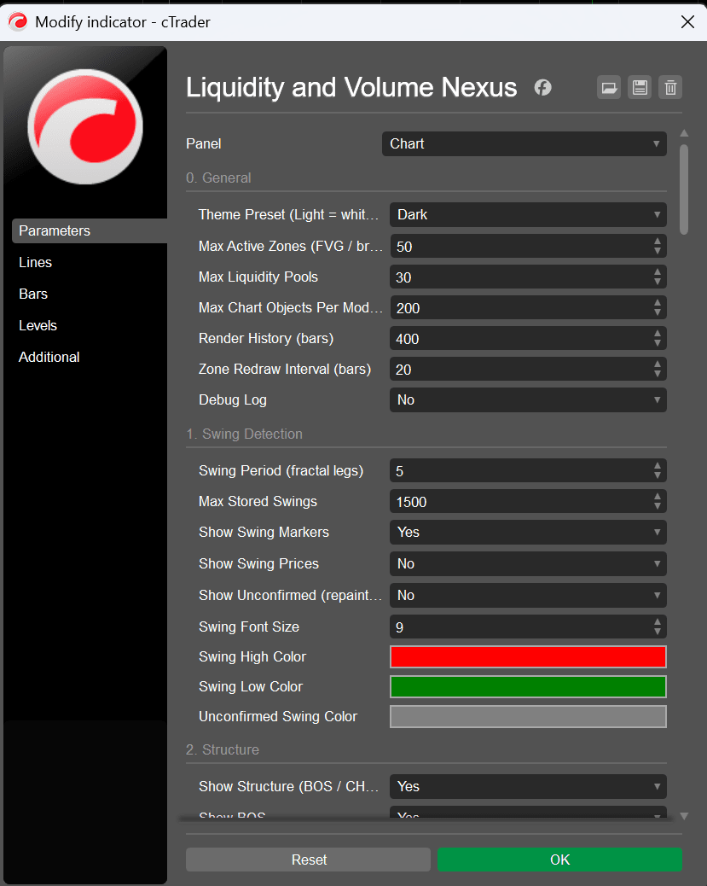
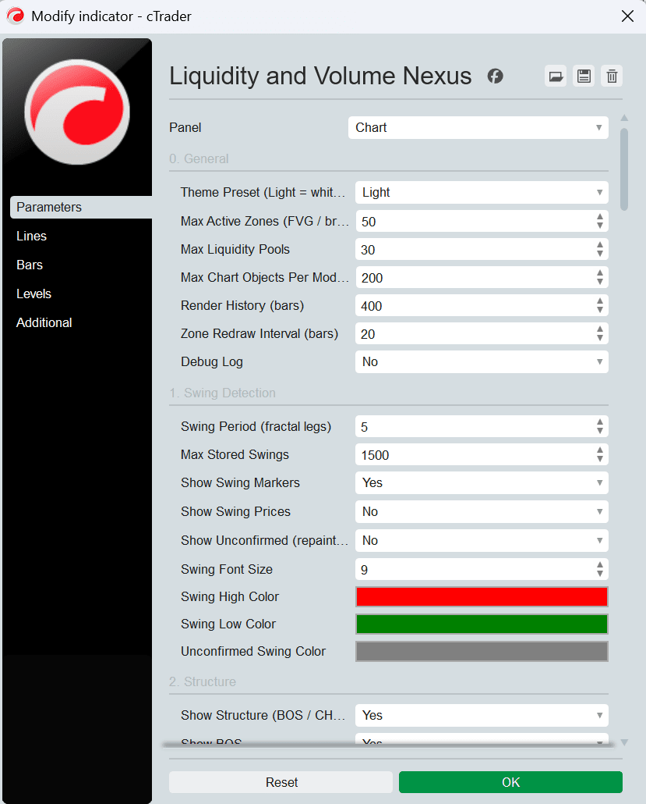
Theme Preset = Light: the whole palette re-maps in one click — apply the preset first, then fine-tune single colours only if you must.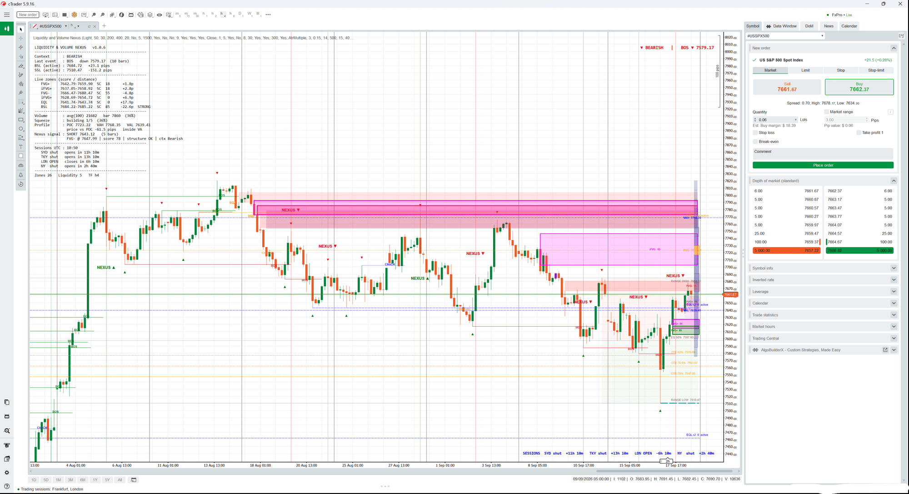
23. Reading the Chart — Every Glyph and Its Variations
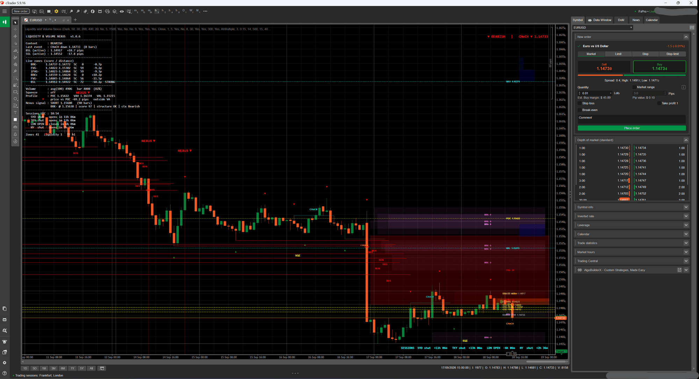
This is the visual dictionary. Learn it once and the chart becomes a sentence you can read.
23.1 Swings
| Mark | Meaning |
|---|---|
| ▼ filled red triangle above a bar | Confirmed swing HIGH — a pivot the market completed Swing Period bars ago. Candidate BSL; a future break of it is a structure event. |
| ▲ filled green triangle below a bar | Confirmed swing LOW — candidate SSL. |
| ▽ / △ hollow grey (optional) | PROVISIONAL swing on the forming bar — a preview that repaints by design. Never trade it; it is a "what if" mark, not a level. |
23.2 Structure events
| Mark | Meaning |
|---|---|
| Solid lime line + "BOS" | Bullish break of structure — a swing high taken out with the trend. Trend continuation; context = BULLISH. |
| Solid red line + "BOS" | Bearish break — a swing low taken out with the trend. Context = BEARISH. |
| Dotted aqua line + "CHoCH" | Bullish change of character — the FIRST break of a high against a bearish context. The earliest structural warning that the downtrend may be over. Not a buy signal by itself — a regime question mark. |
| Dotted orange line + "CHoCH" | Bearish change of character — mirror image. |
| Two dotted silver horizontals | Active BSL (upper) / SSL (lower) — the levels the market currently answers to. Everything else (sweeps, breaks) is measured against these two. |
| Lime / red rectangle near a broken swing | Bullish / bearish breaker block — the last opposite candle before the break; a retest zone institutions tend to defend. Watch it fade/leave when it is mitigated or ages out. |
23.3 Zones (FVG family)
| Mark | Meaning |
|---|---|
| Lime rectangle "FVG+ <score>" | Bullish fair value gap — support-from-imbalance. The number is the Volume Score (0–100). Brighter fill + thicker border = busier zone. Score ≥ 60 reads STRONG; ≥ 80 very strong (A+ grade material). |
| Red rectangle "FVG− <score>" | Bearish FVG — resistance-from-imbalance. |
| Faded rectangle + "MIT" | Mitigated — consumed by a close through its far edge. It lingers Keep Mitigated Zones bars for context, then disappears. |
| Orange rectangle "iFVG+ / iFVG−" | Inverse FVG — a consumed gap flipped polarity: filled support became resistance (and vice versa). First retest of an inverse is a classic continuation entry. |
| Lime/red rectangle "BRK+ / BRK−" | Breaker block (Section 23.2). |
| "[H4]" tag inside a label | The zone belongs to the higher timeframe (MTF mode) — it is background context, drawn dimmer, and a signal that reacts at it says so everywhere. |
23.4 Range & prior levels
| Mark | Meaning |
|---|---|
| Red tint (upper half) / green tint (lower half) | Premium / Discount of the current dealing range. Longs belong in the green half, shorts in the red half; a long signal firing in premium is a warning to size down or skip. |
| Dotted silver "EQ 50%" | Equilibrium — the range's fair middle. |
| Three dotted yellow lines "OTE 62 / 70.5 / 79" | The optimal-entry band of the retracement. Continuation longs ideally trigger inside it. |
| Solid gold "PDH" / "PDL" | Prior UTC day's high / low. Resting liquidity above/below; the most-watched intraday levels in existence. |
| Dotted gold "PWH" / "PWL" | Prior ISO week's high / low — the swing-trader's magnets. |
23.5 Liquidity lines
| Mark | Meaning |
|---|---|
| Orange line "EQH x2 / x3" | Equal highs — a stack of stops above. The more touches, the heavier the line style. Price approaching an EQH from below is approaching fuel. |
| Aqua line "EQL x2 / x3" | Equal lows — stops below. Mirror reading. |
| Gold line "BSL" | Single-swing buy-side liquidity (the active swing high's resting orders). |
| Turquoise line "SSL" | Single-swing sell-side liquidity. |
| Grey dotted line "… SWEPT" | Taken out. The stops behind that level were harvested at the recorded bar; the raid's extreme is remembered. Inside Keep Swept Pools bars this grey line is the most actionable object on the chart: it is what the Reversal setup fades and what a "fake breakout" looks like after the fact. The panel lists it with "*". |
| "SQZ" yellow glyph under a bar | Volume squeeze fired: N quiet bars against a nearby zone. Coiling — expect expansion, direction unknown (Section 30.4 tells you how to lean). |
23.6 Signals & plans
| Mark | Meaning |
|---|---|
| "NEXUS ▲" lime under a bar + lime vertical line | LONG signal fired on that closed bar. |
| "NEXUS ▼" red above a bar + red vertical line | SHORT signal. |
| Silver solid "ENTRY", red dotted "STOP (−Np)", lime "TP1 (+x.xR)", mid-lime "TP2", dim "TP3" | The projected plan with its risk (translucent red box) and reward (translucent green box) regions and the header "▲ LONG A R:R 1:2.3". |
| "✗ STOP −1.0R" at the stop level | The plan's outcome tag — it died here, honestly measured. |
| "✓ TP1 +2.0R" at the target | First objective reached. |
| "• ZONE GONE / STRUCTURE FLIP / SUPERSEDED / EXPIRED ±x.xR" | Non-price outcomes, booked at that bar's close. |
23.7 Profile
| Mark | Meaning |
|---|---|
| Navy histogram at the right edge | Per-price volume of the selected period; row length = relative volume; the brightest row is the POC bin. |
| Yellow "POC" line | The period's fair price — a magnet and a pivot. |
| Aqua "VAH" / "VAL" | Value-area edges. Acceptance inside, exploration outside; the edges themselves act as support/resistance on re-entry. |
24. The Signal Card, Line by Line
▼ SHORT Grade A+
----------------------------------
Zone FVG- [H4]
7639.90 - 7642.79
Score 78 (Strong)
Gates 4 / 4
Track A+: 12 closed, avg +0.31R, win 58%
Setup REVERSAL - faded swept BSL (2 bars ago)
Ctx RANGE (favours reversal)
----------------------------------
Entry 7638.10 (market @ close)
Stop 7655.80 (sweep high)
TP1 7597.60 +2.3R (EQH x2 pool)
TP2 7530.47 +4.6R (SSL pool)
TP3 7463.00 +6.9R (3x TP1)
R:R 1 : 2.3 net 1 : 2.0
Size 0.42 lots (1% risk)
ADVICE ▼ SHORT signal 01 May 12:00 UTC (LDN)
hold <= 60 bars (~5h, ~5 H4 bars) - then exit or re-assess
adverse: max 17.7p = 1.0R at the stop; typical MAE -0.44R (n=12)
----------------------------------
HTF H4 BEARISH ✓ aligned
STATUS LIVE 42 bars left
| Line | How to read it |
|---|---|
| Header ▼ SHORT Grade A+ | Direction and the checklist grade. The card only appears at or above Toast: Minimum Grade. |
| Zone | The level the signal reacted at, with its price range and an [H4] tag when it is a higher-timeframe zone. |
| Score | That zone's Volume Score and strength bucket — how busy the level has been. |
| Gates 4/4 | Confluence gates passed (zone score / structure-or-SFP / volume anomaly / HTF). A 3/4 card is a B — watchlist, not click. |
| Track | The grade's OWN record on your feed from the journal. "avg −0.2R, win 31%" on a letter is more useful than any letter. |
| Setup | CONTINUATION or REVERSAL — faded swept BSL/SSL/EQH/EQL, with the sweep's age. Two different trades; never confuse them. |
| Ctx | The chart-TF regime and which setup it favours (shown in Reversal/Both modes). |
| Entry | "market @ close" or "limit @ zone EQ" — and for a limit, the card's STATUS shows LIMIT PENDING until traded. |
| Stop | Its structural anchor in words: swing low/high, zone edge, sweep extreme, signal-bar wick, or "entry buffer" (non-structural — such plans are rejected by the gates before you ever see them). |
| TP1/TP2/TP3 | The ladder with each rung's R multiple and what it is made of (a real pool or a labelled fallback). |
| R:R | Gross and NET (after spread) on TP1; display capped at "5+" — raw values live in the journal/CSV. |
| Size | Suggested volume for your configured % risk (platform arithmetic; display-only). |
| ADVICE | Section 15: when, how long, how far against. |
| HTF | The higher-TF regime and its relation to the trade (✓ aligned / ~ neutral / ✗ opposing) — with MTF off the line is absent and A+ does not require it. |
| STATUS | LIVE with the bars left on the horizon, or LIMIT PENDING @ price while an order waits. |
The RESULT card (after the plan dies) is compact and factual: outcome status, the R, the reason in plain
English, when it happened and how long ago ("held 5 bars, 2 bars ago"), the levels, and — for a limit that never
became a trade — "no fill" with the honest cause ("the limit never traded" vs "the bar gapped through the entry
below the stop — no openable position"). A recap rebuilt after attach carries [history].
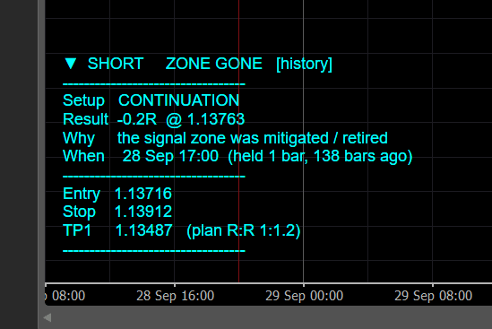
25. The Info Panel, Line by Line
| Line | How to read it |
|---|---|
| Context : BULLISH H4: BEARISH | Chart-TF regime and (with MTF) the HTF regime. Agreement = green light for size; disagreement = the HTF veto's territory — treat chart signals as counter-trend scalps or stand aside. |
| Last event : BOS up 1.08450 (7 bars) | The newest structure event and its age. A fresh event (< 10 bars) is confirmation fuel; an old one explains nothing. |
| BSL (active) / SSL (active) | The active swing levels with signed pip distances (positive = above price). These are the next breakout/fade candidates. |
| Prior day / Prior week | PDH/PDL and PWH/PWL with signed distances — the session's reference frame. |
| Live zones list | The N nearest active zones: type (with "*" = swept pool), price range or level, score, signed distance, STRONG flag. Your shopping list, sorted by proximity. |
| Volume : bar 1843 baseline 1210 (152%) | The current bar's volume vs its time-of-day yardstick. > 150% = participation; < 60% for several bars = squeeze territory. The second line shows the rolling average, the same-hour average and the baseline mode — full transparency about the yardstick. |
| Squeeze : ACTIVE 7 bars @ 41% … | Streak state, or "building 3/5", or "off". |
| Profile : POC / VAH / VAL + price vs POC + inside/outside VA | The period's value geography in one line. |
| Nexus signal : SHORT 1.08320 (4 bars) + reason | The last signal with its full reason string (zone, score, entry rule, structure, context, session). |
| Trade plan block | Levels + live position state: "now 1.08250 open +0.35R stop 1.15R away TP1 0.85R left (LIVE, 38 bars left)", or LIMIT PENDING, or the dated outcome — the panel keeps answering after the projection is gone ("horizon over"). |
| size 0.42 lots (1% of balance) | The size hint for the live plan. |
| cost: spread 8p net R:R gate 1.0 | The live cost model — with "(assumed)" if the feed publishes no spread. |
| Journal block | Section 16: populations, outcomes, averages, MFE/MAE, PF/maxDD/streak/t, per-grade records, the grade check. |
| Rejections : no structure event 912 | no fresh sweep to fade (short) 210 | cooldown 54 | The engine's "no" distribution since attach. This line alone answers "is it broken?" (no — it is waiting, and here is exactly what for). |
26. Life of a Signal — From Close to Record
- Bar closes. The engine evaluates the closed bar through the ten gates. Most bars die early and are counted in
Rejections. - Signal fires. The plan is built (stop anchored to structure, ladder from live liquidity, cost checked), validated (a plan with a non-structural stop or a ratio below the gates is rolled back — the engine behaves as if it never fired), then: marker, projection, card, journal entry, alerts (live edge only).
- The plan lives. Every tick, the life-cycle watches: stop, TP1, premise (zone / structure / supersede) and horizon. The card counts down; the panel shows the live R state.
- The plan dies — once, latched. The outcome tag appears on the chart, the result card recaps it, the alert reports it, the journal records status + R + holding time + MFE/MAE.
- The record accumulates. Averages, PF, drawdown, streak, t-statistic and per-grade verdicts grow. When both A+ and A hold ≥ 10 measured closes, the grade check tells you whether the letters mean anything on your feed.
27. Entering a Trade — the Procedure
- Read the card top-down. Grade and Track (is this letter earning its keep on this feed?), Setup (continuation or fade — they are managed differently), Gates (4/4 or not), Ctx/HTF lines (regime agreement).
- Check the plan geometry. Stop anchored to something real (the note says what); TP1 at live liquidity; net R:R ≥ your floor; risk in pips you can stomach at the suggested size.
- Check the ADVICE. Signal time (is this fresh or 40 bars old?), hold window vs the time you can actually manage the position, adverse guidance vs your patience.
- Place the order manually. Market at the close price, or a limit at the plan's entry — the product places nothing, by design (AccessRights.None). Use the Size line for volume.
- Set your broker SL at the plan's stop. The measured statistics assume the stop is real. Then let the life-cycle inform you: card STATUS, panel open-R, outcome alerts.
28. Managing a Trade
28.1 The ladder policy
- TP1 is the system's exit. The journal measures every plan as TP1-first — that is what the statistics you read describe. The simplest way to trade Nexus exactly "as measured" is: full exit at TP1.
- TP2 / TP3 are runner objectives. If you scale out (e.g., 50% at TP1, stop to entry, rest toward TP2/TP3), you are running a different policy than the journal measures. That is legitimate — but judge it with the MFE column: the CSV's
mfe_rtells you, per trade, how much room runners actually had on this feed. - The stop does not move against you. Widening a stop converts a measured −1R into an unmeasured loss. Moving it to entry after TP1 is fine — just know the journal keeps scoring the original policy.
28.2 Using the ADVICE numbers while the trade runs
- Adverse excursion. Price drifting against you inside the typical MAE (from the ADVICE line) is the plan breathing — your own feed's history says trades routinely dip that deep before winning. Consistently beyond it, or beyond ~0.7–0.8R with the hold window half spent, the premise is failing earlier than your record says winners do: that is the discretionary cut the numbers support.
- Hold window. "hold ≤ 60 bars (~5h, ~5 H4 bars) — then exit or re-assess" is the premise's shelf life. At expiry the product itself books the plan EXPIRED at the close. If you are still in, you are holding on hope, not on the setup — re-assess against fresh structure, not against your entry price.
- Premise deaths are information. ZONE GONE / STRUCTURE FLIP outcomes mean the reason for the trade dissolved before the price verdict. Taking those exits manually (as the product books them) keeps your trading identical to your statistics.
28.3 What the outcome tag tells you afterwards
"✗ STOP −1.0R" and "✓ TP1 +2.0R" need no translation. The neutral tags are the interesting ones: a cluster of SUPERSEDED outcomes means your cooldown/horizon settings overlap signals (fine — the newer signal replaced the older plan); ZONE GONE shortly after entry on continuations usually marks zones that were already mostly filled — check the entry-location mode; EXPIRED with a large positive MFE says the market moved but never quite tagged TP1 — that is the runner-policy conversation, and the MFE/MAE averages are your evidence.
29. When to Enter — and When to Wait
The engine already filters; this section is about the human decision layer: among the signals that pass, which deserve your money right now, and which should be watched instead. Read it as a scoring conversation between the card, the chart and the panel.
29.1 The green-light combinations (enter)
| # | Combination | Why it is the good stuff |
|---|---|---|
| 1 | A/A+ CONTINUATION + fresh BOS in direction (< 5 bars) + zone score ≥ 70 + entry in discount (long) / premium (short) + HTF aligned + net R:R ≥ 1.5 | The textbook: the trend proved itself (BOS), the pullback found a busy level on the correct side of equilibrium, and the higher timeframe agrees. This is the profile the grade system was built to surface. |
| 2 | A/A+ REVERSAL + sweep of a multi-touch pool (EQH/EQL x2–x3) or of PDH/PDL-adjacent liquidity + SFP close back inside + long wick (rejection) + Ctx RANGE + volume spike 2–5× baseline | The raid was big, obvious and rejected with participation — stops harvested, no follow-through. The sweep extreme gives you a stop the market has already defended once. |
| 3 | Signal at a confluence stack: zone edge coincides (within a few pips) with EQ 50% or the OTE band, or with POC/VAH/VAL, or a breaker overlapping an FVG | Independent reasons to react at the same price = one level with several defence budgets. The panel's zone list makes the stack visible. |
| 4 | Signal after a squeeze release: SQZ marker within the last few bars, then volume returns > 150% of baseline in the signal direction | Compression resolved with participation — expansion trades carry further, which is what your TP ladder needs. |
| 5 | Journal verdict supports it: the signal's grade shows positive avg R with n ≥ 10, or the panel's t-statistic has crossed ±2 | Your own feed vouches for this letter. This is the difference between "taking a signal" and "executing a verified system". |
29.2 The yellow lights (reduce size or wait for confirmation)
- Grade B — one gate short. Usually the HTF or the structure gate. Wait for the confirming event (a BOS in your direction, or the HTF to stop opposing); if it comes while price is still at the level, the setup is alive; if price left without you, it is gone.
- Ctx disagreement: chart RANGE, HTF strongly trending, and the signal is a continuation against the HTF — the veto is off, but the tape is. Half size or skip.
- Continuation late in a leg: the 3rd–4th BOS of one directional run, price deep in premium (for longs) far from EQ — the trend is aging; entries here chase. The ADVICE "typical MAE" from your journal will show it: late-leg trades dip deeper.
- Thin targets: TP1 is a fallback ("fallback 2x ATR") rather than a real pool — the market has no obvious resting liquidity nearby; expect the R:R to be harder to deliver.
- Spread stress: the panel shows the spread near your
Max Spreador flagged "(assumed)" around rollover — costs are quietly eating the net ratio; the gate protects you only if it is on. - Session edges: signals in the last 30–45 minutes of London or New York have a truncated runway to TP1 before the session's volume disappears. Either take them smaller or only on M5–M15 where the horizon is short.
29.3 The red lights (do not enter, whatever the card says)
- The signal is stale. STATUS shows few bars left, or the card is a
[history]recap, or price has travelled more than ~⅓ of the way to TP1 since the signal bar. The measured edge belongs to the entry the plan describes — not to a chase of it. - News is minutes away (inside your blackout window even if the gate is off — the gate protects signals, your cursor needs protecting too).
- Journal says NEGATIVE: the grade's Track line is meaningfully negative with n ≥ 15–20, or the panel prints "NEGATIVE edge significant". The system is telling you, with your own data, to stop. That is the feature working, not failing.
- You cannot place the stop. If your broker's minimum stop distance or the current volatility makes the plan's stop unexecutable, the plan is unexecutable — the micro-stop gate exists for exactly this class of problem; respect its verdict manually when it is about your account, not the print.
- You are already exposed to the same idea: two longs on correlated pairs (check the Watch board — same context everywhere) is one trade with double size.
29.4 "It hasn't fired in days — is it broken?"
No. Open the panel's Rejections line. It is a histogram of the engine's patience:
| Top reason | What the market is doing | What you can do |
|---|---|---|
no structure event / structure too old | No fresh break at all — deep range or a slow grind | Switch Direction Mode to Reversal or Both: ranges are the fade's home turf |
no zone at the entry | Price is in no-man's-land between levels | Nothing — this is the filter working; wait for the next zone touch |
volume …x below … | Holiday/rollover quiet | Nothing — low participation means low follow-through; the gate is protecting you |
volume spike …x | Headline prints | Stand aside manually too — the aftermath of an 8×+ spike is spread and slippage |
no fresh sweep to fade | Reversal mode without raids | Use Both mode so continuations may also fire |
reversal vs BULLISH/BEARISH context | A trend is running — fades are vetoed | Correct behaviour. Wait for the trend to exhaust into a pool, or trade continuations |
cooldown | Signals ARE firing, the throttle is pacing them | Nothing — that is the point |
plan R:R below the minimum / plan risk inside the spread | Setups exist but are untradable at current geometry/cost | Check the spread; consider a higher TF where the same levels give bigger plans |
30. False Moves & Breakout Clues — the Interpretation Chapter
Liquidity reading is, at bottom, the study of two questions: was that move real, or was it harvesting? and is the market about to leave this range, and in which direction? This section is the field guide.
30.1 Anatomy of a false move (the sweep / SFP)
The reliable signature, in order of appearance:
- A level with obvious resting orders: EQH/EQL pool, PDH/PDL/PWH/PWL, the active BSL/SSL, a round number. The indicator labels all of these — the fuel is visible before the match.
- The raid: a fast push through the level, typically a single bar or two, on elevated volume. In Wick sweep mode the pool greys to "SWEPT" immediately; the raid's extreme is recorded.
- The failure to progress: the close comes back inside the level (the SFP). This is the tell. A breakout that is real closes beyond and holds; a harvest wicks beyond and returns.
- The consequence: everyone who entered on the "breakout" is trapped beyond the level; their stops now fuel the opposite move. A REVERSAL signal firing here is the product trading exactly this mechanism — with the stop beyond the raid extreme, i.e. beyond the trap.
- Close location. Close back inside the level = sweep. Close beyond + the next bar also beyond = break.
- Bar shape. Long wick, small body at the level = rejection. Full-body marquee closing through = acceptance.
- What happened after. A real break retests the level from the other side and holds (the level flips: old resistance becomes support). A sweep never retests successfully — price just leaves.
- Volume profile. Acceptance means volume building beyond the old VAH/VAL; a raid on a spike that prints no volume beyond the level is a probe, not a migration.
- The engine's own verdict. Wick-mode sweep + close back inside = the reversal setup may fire. Close-mode confirmation = a BOS prints and the continuation logic owns the move. The two modes literally encode the two readings.
30.2 False-move variants you will meet
| Pattern | Reading |
|---|---|
| PDH/PDL wick-and-return at London open | The classic session fakeout: the first 1–2 hours raid yesterday's extreme to gather orders, then reverse into the session's real direction. A reversal signal at PDH/PDL in this window is among the highest-quality the product generates. |
| EQH x3 "too clean" levels | Three+ perfectly equal highs are advertised liquidity — the more obvious the stack, the more likely the first push through it is a raid. Do not buy the breakout of an EQH blindly; wait for either the SFP (fade) or a close-and-hold beyond (then the EQH is fuel spent, and continuation logic applies). |
| News spike through everything | Volume > 8× baseline + bar range > 4× ATR = the engine rejects by design. Manually: spreads are wide, fills are fiction, and the first post-news level touch often re-loads the other side. Wait 2–3 bars. |
| The CHoCH that fails | A CHoCH is the FIRST break against the context — by definition early and unproven. Roughly half of them are just deep pullbacks. Trade a CHoCH only with confluence (it coincides with a swept pool / OTE / HTF level) — otherwise wait for the second break (the BOS that confirms the change). |
| Low-volume drift beyond a level | Price oozing past BSL on declining volume with no volume-anomaly participation: nobody is home. These "breaks" routinely fail — the engine's volume gate rejects signals born there, and so should you. |
| Weekend/rollover gaps | A gap "through" a level is not a sweep and not a break — it is an absence of trading. Watch the first bars back: real business resumes when the gap edge is tested and held/rejected with volume. |
30.3 Breakout clues — when the range is about to end
- Squeeze + location. SQZ fired while price sits compressed just under a heavy EQH or just above an EQL (or against PDH/PDL) — the coil is loaded against a specific wall. The expansion, when volume returns, has a first direction bias: away from the wall it could not break, or through it if the release bar closes beyond with ≥ 1.5–2× baseline volume.
- Repeated defence with shrinking recoil. Each touch of a level makes a shallower pullback (visible as successive higher lows into an EQH): absorption. The level is being eaten from below — breaks under absorption tend to run.
- Value-area migration. The profile's VAH/VAL of the current session pushing against the prior session's — price is being accepted progressively higher/lower. Breaks in the direction of migration have follow-through; breaks against it are usually fades.
- Structure compression. Active BSL and SSL converging (both within a few pips on the panel) = a triangle of resting liquidity on both sides. Whichever goes first harvests the other side's stops — many desks wait for that first raid and trade the SFP if it fails, or the continuation if it holds.
- HTF context turning. An H4 CHoCH while the chart TF is still ranging against it — the higher timeframe is early, and chart-TF continuation signals in the new HTF direction are the ones to prioritise from here on.
30.4 Putting squeeze, sweeps and context together — four chart states
| State (badge + evidence) | What is likely | What to trade |
|---|---|---|
| RANGE + pools intact both sides | Rotational chop between BSL and SSL | Fades at the edges (Reversal mode), targets = EQ/POC then the opposite edge; skip mid-range entirely |
| RANGE + SQUEEZE + price at one wall | Imminent expansion, direction leaning away from the wall that keeps holding — or through it on a volume release | Wait for the release bar; trade the first Nexus signal after it (often a reversal at the raided wall, or a continuation from the new breaker) |
| BULLISH/BEARISH + fresh BOS + pullback into discount/premium zone or OTE | Trend continuation cycle in progress | The A-grade continuations (green-light #1); the HTF-aligned ones first |
| Trending into a heavy HTF level (badge disagrees with HTF) | Exhaustion territory: the chart trend is running at the higher timeframe's wall | Stop taking continuations into it; watch for the raid+SFP of the wall's liquidity — that reversal is the highest-conviction fade available |
31. Multi-Timeframe Workflow
- Set the pair. Rule of thumb: HTF ≈ 4–6× the chart TF. M5→M30/H1, M15→H1/H4, H1→H4, H4→D1. Enable MTF; the badge now shows both regimes.
- Start from the HTF story. Badge: what is the H4 context? Where is price relative to the H4 active BSL/SSL and the [H4]-tagged zones? That is your permission slip: with H4 BULLISH you favour longs on the chart TF, treat shorts as scalps, and let
Require HTF Confirmationveto the rest if you want machine discipline. - Trade the chart TF inside that story. The best signals are the ones where both lines of the badge point the same way — those are the A+ candidates (alignment is literally the A+ gate).
- Use the ADVICE HTF line. "hold ≤ 60 bars (~5h, ~5 H4 bars)" tells you the plan spans about one H1 candle of H4 decision-time — an H4 trader would not even notice it. If the HTF count is < 1 bar, your horizon is shorter than the higher timeframe's heartbeat: either extend
Trade Plan Horizonor accept scalp semantics. - When contexts fight, the Watch board and the rejections line explain why nothing fires — and the honest answer is usually "wait for the HTF to finish its event".
32. Working with the Journal, Statistics & CSV
32.1 The weekly five-minute review
- Read the populations line: how many signals, how many closed, how many not-filled (limit mode), how many abandoned (you switch timeframes a lot?).
- Read the performance-risk line: PF > 1.3 with maxDD you could have lived with = the system is paying; t ≥ 2 = the sample now vouches for it; "not yet significant" = keep the size small, keep collecting.
- Read the grade ladder: is A+ actually beating A on your feed? If the grade check says no for weeks, your minimum-grade setting is a style choice, not an edge filter — that is fine, but know it.
- Read MFE vs the outcome mix: avg MFE ≫ avg result with many EXPIRED/ZONE GONE = your exits leave money on the table → study the TP ladder policy (28.1). Avg MAE ≈ −1R with mostly stops = entries are late → tighten the entry-location mode or the chase cap.
- Export the CSV periodically (or set the auto-print), and keep a folder by month. The journal ring holds up to 2000 entries; your archive is forever.
32.2 CSV columns (30)
time, symbol, timeframe, direction, setup, grade, zone, session, htf_aligned, volume_score, gates,
entry, stop, tp1, tp2, tp3, rr_gross, rr_net, spread_points, entry_type, filled, fill_time, source,
status, result_r, held_bars, mfe_r, mae_r, outcome_time, plan_key — every row has exactly the header's field count;
plan_key (v2.3.5) joins a journal row to the robot's execution row one-to-one;
unfilled orders carry empty R/MFE/MAE cells because they were never trades; source separates live from
replay. This is a complete forward-test dataset: paste it into any spreadsheet and pivot by setup/grade/session —
the product deliberately keeps its own aggregation simple and gives you the raw truth.
time,symbol,timeframe,direction,setup,grade,zone,session,htf_aligned,volume_score,gates,entry,stop,tp1,tp2,tp3,rr_gross,rr_net,spread_points,entry_type,filled,fill_time,source,status,result_r,held_bars,mfe_r,mae_r,outcome_time,plan_key 2026-09-28 17:00,EURUSD,h1,SHORT,CONTINUATION,B,IFVG- 1.13731,LDN+NY,true,79,5/7,1.13716,1.13912,1.13487,1.13260,1.13033,1.72,1.41,1.2,limit,true,2026-09-28 19:00,live,STOPPED,-1.0,1,0.4,-0.8,2026-09-29 02:00,lvn-e7f3a1Copy the whole block from the cTrader log into a spreadsheet — every row keeps the header's field count, so pivots never shift.
33. Alerts & Debug Log
- [LVN ALERT] — every live signal and every outcome (stop/TP1/premise deaths, NOT FILLED with its reason) lands in the cTrader log with this prefix, plus an optional sound. The cTrader indicator API has no popup channel; the corner card IS your popup, and the log is your paper trail.
- Live-edge discipline — attaching to a chart never replays last month's alerts at you; history is silent by design.
- Debug Log = true adds: the history-pass report (one line: bars, signals, newest plan outcome, card state and why), every card transition, per-bar rejection reasons at the live edge, and start-up settings normalisation notes. Turn it on when something seems missing; leave it off for quiet operation.
- Squeeze alerts are separate and off by default — they are informational, not trading signals.
34. Timeframe & Instrument Guide
| Context | Recommended setup |
|---|---|
| M1–M5 scalping (FX majors, London/NY) | Swing legs 3–4; session filter ON (LDN+NY only, off-hours OFF); news blackout ON; Direction Mode = Both; horizon 40–60 bars; limit entry if your execution allows; cooldown 8–12. |
| M15–H1 intraday | Defaults + MTF ON (H4); Require HTF Confirmation ON; session filter ON including Tokyo if you trade JPY; horizon 60–120. |
| H4–D1 swing | Swing legs 6–8; MTF ON (D1/W1); volume anomaly ratio 1.3–1.5 (bigger bars smooth volume); cooldown 3–5; horizon 100–200; Max Spread gate ON (swing entries must not pay crisis spreads). |
| Gold / indices | Defaults adapt (ATR-scaled filters). Widen Equal-Level Tolerance to ATR mode (0.25–0.4): metals print messy equal levels in points. News blackout strongly recommended — gold raids both sides of everything at 12:30/14:00 UTC. |
| Crypto (24/7) | Baseline Mode = Rolling (no session seasonality to model); session filter OFF; the assumed-spread class estimate gives crypto the conservative 2-pip floor when the feed publishes nothing; keep the micro-stop gate ON — crypto spreads breathe. |
| Exotics / wide-spread CFDs | Set Max Spread to your pain threshold and Minimum NET R:R ≥ 1.2 — wide costs need wider edges. The card's net ratio will show you the truth per signal. |
SECTION 3 — TIPS
The habits that make the product pay for itself — and the mistakes that make traders quit it.
35. The Golden Rules
- The card is the contract. Trade what it says — entry, stop, ladder, horizon. A trade you improvise away from the plan is a trade the journal cannot vouch for.
- Freshness beats beauty. An average signal taken on its bar beats a gorgeous one taken 20 bars late. Read the ADVICE age and the STATUS countdown before anything else.
- The stop is sacred. It sits beyond real structure (the card says which). Never widen it; the moment you do, you have left the measured system and entered an unmeasured opinion.
- Trade the setup you are configured for. Continuation and Reversal are different trades with different regimes. The Setup line exists so you never confuse them; the Ctx line tells you which one the market is currently paying for.
- Costs are part of the signal. Net R:R, max spread and the micro-stop gate are not bureaucracy — they are the difference between a plan and a donation.
- Let the journal reach significance before you scale. Until t ≥ 2 (or at least n ≥ 20–30 measured closes in the black), trade the minimum size that lets you collect data. The product prints its own verdict; obey it.
- One impulse, one trade. The cooldown exists because markets repeat themselves within a move. Re-entering "the same idea" three bars later is the same trade with worse geometry.
- Context over signal. A signal against a strongly trending HTF, in premium, on a fallback target is three yellow lights — no grade redeems that. The badge and the ADVICE block are part of the signal, not decoration.
- Volume is the lie detector. Moves without participation (below baseline) fail; raids on absurd spikes (>8×) are headlines. The engine filters both — respect the same rule when you override anything by hand.
- Review weekly, adjust monthly. Five minutes with the journal block (32.1) per week; parameter changes only after enough closes to justify them. A system tuned on three trades is a mood, not a method.
36. Recommended Presets by Trading Style
| Parameter | Scalper (M1–M5) | Intraday (M15–H1) | Swing (H4–D1) | Crypto (any) |
|---|---|---|---|---|
| Swing Period | 3 | 5 | 6–8 | 4–5 |
| Signal Direction Mode | Both | Both | Continuation | Both |
| Enable MTF / HTF | ON / M30–H1 | ON / H4 | ON / D1 | ON / ×4–6 TF |
| Require HTF Confirmation | OFF (speed) | ON | ON | ON |
| Session filter | ON: LDN+NY only | ON: LDN+NY(+TKY for JPY) | OFF | OFF |
| News blackout | ON ±20–30 min | ON ±15 min | ON ±15 min | OFF |
| Volume Baseline Mode | Blended | Blended | Blended | Rolling |
| Volume Anomaly Ratio | 1.5 | 1.5 | 1.3 | 1.4 |
| Entry Location | Touching / Inside | Touching (default) | RetracedIntoZone 40–50% | Touching |
| Trade Plan Entry | Limit at zone EQ (if you can babysit) | Market at close | Limit at zone EQ | Market at close |
| Trade Plan Horizon | 40–60 | 60–120 | 100–200 | 60–120 |
| Signal Cooldown | 8–12 | 10 | 3–5 | 10 |
| Max Spread (points) | your broker's normal +2 | normal +3 | normal ×2 | normal ×2 |
| Min NET R:R | 1.0 | 1.0–1.2 | 1.2–1.5 | 1.2 |
| Risk Per Plan | 0.5–1% | 1% | 1–2% | 0.5% |
Save each as a cTrader preset (.preset) after configuring — switching styles should take one dropdown, not twenty dialogs.
37. Risk Management with Nexus
- Start from the Size line. It is the platform's own proportional-risk arithmetic on the plan's stop distance at your configured % — the single most execution-ready number on the card. 1% default is a professional starting point; 0.5% while the journal is young.
- Respect the cost gates.
Minimum NET R:R ≥ 1.0andMinimum Plan Risk ≥ 3× spreadare the floor of tradability. Raising them (net 1.2–1.5 on wide-spread instruments) improves the average outcome at the price of fewer signals — usually a trade worth making. - Use maxDD as your sizing mirror. The journal's max drawdown in R is what holding this system actually felt like on your feed. If 4R of drawdown would have made you quit, your % per trade is too high — that is arithmetic, not psychology.
- Correlated exposure. The Watch board shows neighbouring symbols' regimes at a glance: three pairs all BULL ▲ on H4 means one dollar-risk trade wearing three costumes. Count the idea, not the tickets.
- The losing streak will come. The "worst streak" statistic exists so the streak doesn't surprise you: at a 50–55% win rate, streaks of 4–6 losses are ordinary weather. Sizing is the only defence that works against weather.
- Never average down against a plan. The stop beyond the raid extreme / swing is where the idea is proven wrong. Adding size beyond it converts a measured −1R into an unmeasured disaster — the one mistake no indicator can survive.
38. What NOT to Do
| Don't | Why | Do instead |
|---|---|---|
| Judge the system on its first 10 trades | At n=10 the t-statistic cannot distinguish edge from noise — the panel says so out loud | Collect 25–30 measured closes at minimum size; read the verdict line |
| Disable the cost/volatility gates "to see more signals" | You will see more of exactly the signals that lose: news bars, micro-stops, spread-eaten ratios | If volume is too low, change timeframe or instrument — not the gate |
| Trade every card regardless of Setup/Ctx | A continuation in a range and a fade in a trend are the two classic ways to pay the market's tuition | Match the setup to the regime: Ctx line, badge, HTF — they agree more often than you think |
| Enter stale signals or chase price toward TP1 | Your fill has a different R:R than the measured plan; the journal no longer describes what you did | Freshness rule (27); if you missed it, the rejections line will tell you the next one is coming |
| Move the stop wider "just this once" | Turns a bounded −1R into an unbounded loss and corrupts your own statistics | Cut early if the premise died (ZONE GONE / FLIP logic), never later |
| Read replay statistics as your track record | History-replay entries are the same logic's past on this feed — informative, but not yours | Keep "Count History Replay In Stats" OFF; the panel prints the exclusion sentence for a reason |
| Treat grades as probabilities | A+ is a checklist result; its worth is the Track line's measured average, which varies per feed | Let the grade check calibrate: if A+ doesn't beat A on your symbol, believe your feed over the letters |
| Run it on 12 charts at once with everything enabled | Not a correctness problem — an attention problem; you will miss freshness windows | 2–4 charts, alerts on, journal-driven review |
| Fade a strong trend because "it's overextended" | The Range-context veto exists because measured fading of trends lost money in testing | Keep Reversal: Require Range Context ON; trade the HTF level instead (30.4, state 4) |
| Ignore the "(assumed)" spread flag | If your feed publishes no spread and the assumption is too tight, every net-R:R verdict is optimistic | Set Assumed Spread manually to your broker's real typical spread |
| Use the provisional (hollow) swings for decisions | They repaint by definition — they are a preview of what might confirm | Trade only what is confirmed; the preview is for anticipation, not execution |
39. What to Follow — the 30-Day Onboarding Plan
- Days 1–3 — observe. Defaults on your 1–2 chosen charts, MTF on, Debug Log on. Take nothing. Read each card top-down when it appears; read the history-pass report; learn your rejections line's normal shape.
- Days 4–10 — paper the signals. Log every card you would take (a screenshot or a CSV note). Compare against what the journal books. You are calibrating your eyes against the machine's honesty.
- Days 11–20 — minimum size, live. 0.25–0.5% risk. Trade only green-light combinations (29.1) — expect 2–5 trades, not 20. Follow the plan mechanically: stop real, exit at TP1.
- Day 21 — first review. Journal block + CSV: does the shape match your paper week? MFE/MAE telling you your exits are early/late? Adjust ONE thing (horizon, entry mode, or size) — never five.
- Days 22–30 — steady state. Continue at minimum size until the measured count crosses ~20–30 closes. Only then let the t-statistic conversation decide whether to scale toward 1%.
40. Reading Grades & Track Records Correctly
- A grade is a checklist, not a forecast. A+ = very busy zone + all gates + HTF agreement. It says the setup is well-formed, not that it wins. What it wins on your feed is the Track line's job.
- Compare letters only within your feed. "A+ averages +0.52R here" and "A averages +0.14R" is actionable; someone else's A+ statistics are not your market.
- The grade check sentence is a feature, not an insult. "A+ does NOT beat A on this feed (n=13/11)" means: on this symbol/TF/broker, the HTF-alignment and score bonuses add no measurable value — trade both letters equally, or investigate why (often: your HTF pair is wrong for this instrument — try a different Higher Timeframe).
- Sample sizes rule everything. n=4 means nothing; n=15 is a hint; n=30+ is evidence. The panel prints n next to every number precisely so you never over-read a hot week.
- Per-session insight via CSV: pivot result_r by the
sessioncolumn — many feeds show LDN and NY behaving differently; the session filter then becomes an evidence-based choice instead of folklore.
41. Performance & Chart Hygiene Tips
- Attaching is cheap since v2.4.2: the history pass defers every draw nobody can see — structure events deeper than
Render History(the surviving budget set is backfilled once at the window), intermediate zone and profile refreshes, unchanged active-level lines — measured 13× fewer chart operations on a 30 000-bar H4 replay (≈30 000 → ≈2 300), final chart state byte-identical, journal untouched. Load time barely depends on history depth any more. On weak machines you can still trim ink:Render History = 200–300,Zone Redraw Interval = 40,Panel Refresh = 2000— signals and journal never change. - H4 + MTF configuration note: if your chart timeframe is the "Higher Timeframe" (H4 chart with HTF = H4), the MTF engine re-analyses the very same series — double work, zero new information, and both engines share one zone budget. Set the HTF one step above the chart (H4 chart → D1), or switch MTF off on that chart.
- Clutter control without blinding the engine:
Max Zones Drawn/Max Liquidity Lines Drawncap what is painted, never what is evaluated. A clean chart with a full engine is the intended experience. - Timeframe switching is safe: open plans are journal-closed as abandoned (excluded from every average), objects are removed, and the history pass rebuilds everything. You will see the "[history]" card recap — that is the design, not a bug.
- Baseline History: 5000 bars is the sweet spot; 0 (all loaded) is fine memory-wise since v2.0.0 and gives the most seasonal stability on symbols with months of history.
- One instance per chart. Two instances of the product on the same chart would double every object family for no new information.
42. FAQ
| Question | Answer |
|---|---|
| Does it repaint? | No. Closed-bar pipeline, confirmed swings publish only after their right leg closes, outcomes latch, PDH/PDL/PWH/PWL come from completed periods. A tick-by-tick run and a closed-bar replay produce identical journals — this is tested, not claimed. |
| Does it trade my account? | No. AccessRights.None — it cannot. It suggests size and prints plans; you execute. |
| Why did the card disappear? | Its plan resolved and the hold elapsed, or a newer signal replaced it (the card always mirrors the most recent accepted signal). The journal and the chart's outcome tag keep the record forever. |
| Why does my card say [history]? | You attached or switched timeframes, and the most recent signal is older than the live edge. The tag and the true age ("95 bars ago") guarantee an old outcome is never mistaken for a fresh one. |
| Win rate? | Whatever your feed produces — the panel prints it with its sample size. Anyone who quotes you a fixed win rate for a liquidity system is selling, not measuring. The design target is a positive expectancy at ~1.5–2.5R winners vs −1R losers, i.e. profitable well below 50% wins. |
| Best symbol/timeframe? | Liquid FX majors on M15–H1 with MTF H4 is the reference configuration; the journal will tell you if your broker's feed agrees. Everything else (metals, indices, crypto) has its preset in Section 36. |
| Can I use it as a standalone system? | Yes — that is what the gates, plan, advice and journal are for. The discretionary layer (Sections 29–30) improves selection, but the measured baseline is the machine's own record. |
| Limit or market entries? | Market = every signal measured, simplest. Limit at zone EQ = better prices when filled, plus the honest NOT FILLED statistics when the market leaves without you. The journal separates the populations either way. |
| What does "5+" mean on R:R? | The display cap. Ratios above Max Displayed R:R print as "5+" because 20:1 plans are usually micro-stop artefacts; the gates (min risk ≥ 3× spread) reject the unexecutable ones before they ever reach the card, and the journal keeps raw values. |
| Where are my popups? | The cTrader indicator API has no popup channel — alerts arrive as [LVN ALERT] log lines, sounds, and the corner card. Pin the log panel or rely on sound + card. |
| Why did attaching on H4 used to take about a minute? | Pre-2.4.2 the replay drew — and instantly budget-evicted — thousands of chart objects for events far from the live edge; H4 charts carry the deepest histories, so they paid the most. v2.4.2 defers those draws (Section 41): same final chart, ~13× less work. If an H4 attach still feels slow, turn on Debug Log: the init line prints the exact bar count your platform loaded, and Section 41's H4+MTF note covers the one configuration that doubles the engine. |
| Why is there a gap under the watch board? | Since v2.4.2 the board reserves two text rows above the chart's bottom edge — and stacks above the session strip when both are on — so the live price area is never covered. Intentional padding, not a stray blank line. |
43. Troubleshooting
| Symptom | First check | Fix |
|---|---|---|
| No signals for days | Panel → Rejections line | It names the blocking gate; Section 29.4 maps every reason to an action |
| No card after attach | Debug Log → history-pass report | It prints the card state and WHY (grade below minimum, plan resolved past hold, toast off…). Toast: Restore Card = ON recaps the newest outcome |
| Card shows old outcome as new? | — | Impossible by design: replays are tagged [history] with true age. If you see a fresh-looking card, it fired at the live edge — check the log's [LVN ALERT] line |
| Journal says "no measured outcome yet" | Fresh attach | Correct — the live record starts now; replay entries are listed but excluded by default |
| Spread shows "(assumed)" | Feed publishes no spread | Set Assumed Spread to your broker's typical value so the net gates judge real costs |
| No EQH/EQL ever forms | Equal-Level Tolerance | Too tight for the instrument (metals!): switch tolerance to ATR mode 0.25–0.4 |
| Watch board empty / "no data" | Symbol names | Broker-exact names (suffixes like ".a" / "#" matter). The row stays visible to show you the typo |
| Chart feels heavy on 50k+ bars | Render History / redraw interval | Section 41 numbers; the engine cost stays, the ink cost drops |
| MTF zones missing | Higher Timeframe data availability | Ensure the HTF series exists for your symbol/broker; Debug Log prints MTF init failures |
| Everything disappeared after timeframe switch | — | That is the reset working: objects removed, open entries marked abandoned, history rebuilding. The recap card returns within moments |
44. Glossary
| Term | Meaning in this product |
|---|---|
| ATR | Average True Range (SMA of True Range, internal, period configurable) — the yardstick of every volatility-scaled rule. |
| BOS / CHoCH | Break of Structure (with-trend break) / Change of Character (first break against the prevailing context). |
| BSL / SSL | Buy-Side Liquidity (resting buy-stops/breakout orders above highs) / Sell-Side (sell-stops below lows). |
| EQH / EQL | Equal Highs / Equal Lows — clustered swings within tolerance; heavy liquidity stacks. |
| FVG / iFVG | Fair Value Gap (three-bar imbalance zone) / Inverse FVG (a consumed gap with flipped polarity). |
| Breaker | The last opposite candle before a broken swing — a retest zone. |
| Sweep / Raid | Price trading beyond a liquidity level to harvest the orders resting there; recorded with its exact extreme. |
| SFP | Sweep-Fail-to-Progress: the raid closes back inside the level — the reversal setup's confirmation. |
| PDH / PDL / PWH / PWL | Prior Day High/Low, Prior Week High/Low (completed UTC day / ISO week). |
| POC / VAH / VAL / VA | Point of Control; Value Area High/Low; Value Area (default 70% of period volume). |
| OTE | Optimal Trade Entry — the 62–79% retracement band of the dealing range. |
| Premium / Discount / EQ | Upper half / lower half / 50% equilibrium of the dealing range. |
| Volume Score | 0–100 normalised activity of a zone against the time-of-day baseline (50 = normal, 100 = 2×+ normal), half-life decayed. |
| Baseline | The "normal volume" yardstick: rolling, same-time-of-day session average, or their blend. |
| Squeeze | A streak of bars below the volume threshold near a zone — compression before expansion. |
| R | One unit of the plan's risk (entry−stop). All outcomes, MFE/MAE and statistics are denominated in R. |
| MFE / MAE | Maximum Favourable / Adverse Excursion in R from the actual fill, latched. |
| Net R:R | (reward − spread) / (risk + spread) — the ratio a real order experiences. |
| PF / maxDD / t | Profit Factor (gross wins / gross losses), maximum drawdown of the cumulative R curve, and the expectancy's t-statistic (|t| ≥ 2 ≈ significant at ~95%). |
| Measured population | Filled, non-abandoned, live-record closes — the only trades any average in this product is built from. |
| Pending / Not Filled | A limit order waiting / an order that never became a position (never traded, or rejected because a gap would open it beyond its stop). Contributes no R, ever. |
| Latched | Once written, never rewritten — outcomes, excursions and sweeps cannot be undone by a later wick. |
Liquidity & Volume Nexus — Official User Manual · v2.4.2 · © 2026. Trading involves substantial risk of loss. Past measurements on one feed do not guarantee future results; this manual describes tooling, not investment advice.